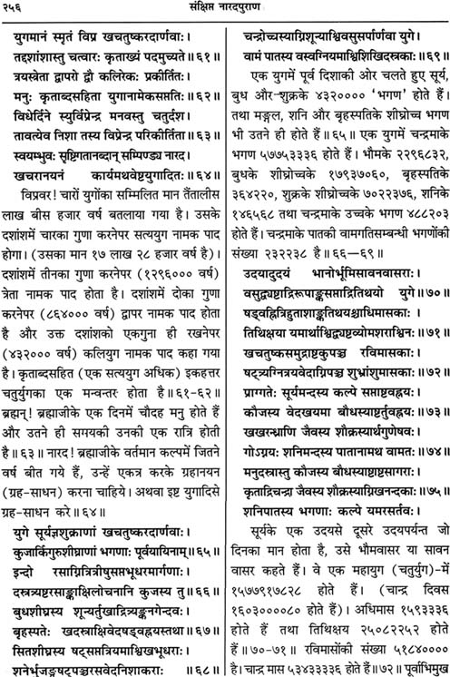

[ WARNING : Many statements in this article are copyright materials and should not be cited without proper acknowledgement, such as about Romaka Siddhanta, Almagest, Puranas, etc. ]
Nine types of kālamāna ( कालमान ) are used in traditional Hindu Calendar . Last (14th) chapter of Surya Siddhānta , the only extant ārsha text of Vedic Astronomy out of 18 original divya siddhāntas, is devoted entirely to this topic. Its first verse enumerates these nine types of mānas (measures) of kāla, hence that chapter is titled mānādhyāya.
Brāhma , Prājāpatya , Divya , Saura , Sāvana, Pitrya , Chāndra, Nākshatra and Gaurava or Bārhaspatya.
( ब्राह्म , प्राजापत्य , दिव्य , सौर , सावन , पित्र्य , चान्द्र , नाक्षत्र , गौरव या बार्हस्पत्य )
It is noteworthy that Sāyana or tropical system is never mentioned as any unit or system of measurement of time in any ancient Indian text. Tropical Year is a modern system starting in 1582 AD after the Church accepted that the Julian Year should be changed to tropical. Many confused persons in India are trying to impose tropical Christian calendar on India using misinterpretation of Hindu scriptures. Therefore, elucidation of key terms in Hindu Calendar is presented below. First of all, the ancient calendar system is explained, starting from Surya Siddhānta, followed with current calendar systems prevalent in India.
|
Table of Contents
|
Original Siddhāntas
18 ārsha siddhāntas by gods or rishis are mentioned in ancient Indian literature, but few of them have survived. Many of them are referred to by ancient authors, but the original works have not survived, aminly because they were not needed in later eras because updated version of ārshaa siddhānta had arrived.
Prof Whitney regards five of these archair siddhantas to be sourced to some "revelation on the part of some superhuman being" :
Brahma, Surya, Soma, Brihaspati, and Nārada Siddhāntas. Excepting Brihaspati Siddhānta which has been lost, all the remaining four have been published.
Surya Siddhānta
It is most popular and easily available archaic siddhānta prescribed in Siddhānta-Jyotisha curriculum of Sanskrit universities in India. Its mathematical terms are same as in all the following archaic siddhāntas.
Soma Siddhānta
One manuscript of Soma Siddhānta is in Berlin library (Weber's Catalogue, No. 840). Colebrooke also possessed it. Benteley spoke of it following the Surya Siddhānta. The following scanned copy of the version published in 1912 AD in Varanasi shows that the terms used in Soma Siddhānta were exactly same as in Surya Siddhānta.

Brahma Siddhānta
The version of Brahma Siddhānta published in 1912 AD in Varanasi also shows that the terms used in Brahma Siddhānta were exactly same as in Surya Siddhānta, as the scanned copy shows below :
The first page of Brahma Siddhānta says that it was given by Lord Brahmā to his son Nārada rishi :
Nārada Siddhānta in Nārada Purāna
Nārada Purāna says the same thing, that Lord Brahmā Ji gave his siddhānta, as the initial verse of Nārada Purāna is the chapter dealing with Siddhānta-Jyotisha (astronomy) says :
Nārada Purāna's detailed description of Siddhānta Jyotisha, presented as the siddhānta of Brahma, is exactly same as the extant Surya Siddhānta, as the following example shows, taken from Gitā Press (Gorakhpur) publication of Nārada Purāna :
Why So Many Siddhāntas ?
Thus, the conclusion is very clear : all the archaic ārsha siddhāntas, as far as the available records show, were identical as far as the basic mathematics and theory of siddhānta is concerned. Then, what was the difference ? The difference lies in beeja corrections which are additions or substractions of few degrees in mean positions of planets, as verse-9 in first chapter on Mean Planets in Surya Siddhānta says : "This is the very same original text-book (shāstram) which the Sun of old promulgated : only by reason of the revolution ('changes') of the Ages ('yugas'), there is here a difference of times ('kālabheda') . Traditional commentators of Surya Siddhānta like Ranganātha (1509 AD) as well as Burgess himself concluded that here Surya Siddhānta admits that all previous siddhāntas were exactly same excepting in one respect : beeja corrections in Mean positions of planets (because this verse appears in Mean Position chapter , and actual tradition of India also gives all beeja corrections only in Mean positions, never in True Positions or other elements).
But the Suryasiddhāntic chapter on Beeja Samskāra, named Beejopanayanādhyāya, was tampered by some mediaeval fool who tried beeja corrections in true position equations for making siddhāntic planets conform with physically observed positions of planets ,i.e. Drik. But this fool failed in the effort, and left the half-baked verses which are useless for any purpose. That is why Ranganātha commented that these verses are interpolated. But Ranganātha was a philosopher, having no knowledge of the actual Suryasiddhāntic tables used by panchānga makers, such as Makaranda Sārani and other tables, which always used beeja corrections in Mean Positions, and declared themselves to be Suryasiddhāntic. All Suryasiddhāntic panchāngas were made from these tables and not from the original siddhāntic text in which beeja chapter had been tampered with.
Hence, at the beginning of Srishti (Creation), the value of beeja was zero and there was no difference between Brahma-siddhānta and Surya-siddhānta at that time. Differences arose in later eras when value of beeja became appreciable and needed to be updated. 17 major updation took place after the Brahma Siddhānta. That is why there were 18 ārsha siddhāntas, of whom only the original Brahma Siddhānta and the last Surya Siddhānta were preserved correctly, others had no reason to being preserved. Soma Siddhānta has few typo errors : 57753376 in verse-22 (see the picture above) instead of 57753336, then one extra zero in verse-28, etc which can easily be corrected with the help of internal analysis of Soma Siddhānta as well as from comparison with other siddhāntas. There is no theoretical difference between Brahma Siddhānta and Surya Siddhānta, except in the fact that the former has no beeja correction because it was correct for beginning of the Creation, while Surya Siddhānta has "Kālabheda" and must include the beeja corrections for present era. other ārsha siddhāntas by rishis have vasnished or tampered with, such as Parāshara Siddhānta appears in Mahāsiddhānta of Aryabhata-ii in changed form, and Brahma Siddhānta appears in changed form in Brahma-sphuta-siddhānta of Brahmagupta who claimed to have corrected the outdated siddhānta of Lord Brahmā !
I have deciphered links of Ptolemy's Almagest with Indo-Bactrian astronomy which was originally a crude form, known as Romaka Siddhanta, of India's siddhantic astronomy. Ptolemy misunderstood it and created a wrong book. Unfortunately, this wrong interpretation influenced Indo-Bactrians and perhaps other foreigners in India which popularized wrong year-length taken from Almagest in Western India, esp Maharashtra to Rajasthan, which led Brahmagupta to change planetary parameters in accordance to Ptolemaic parameters in a crude and Indianised manner, and Bhaskara-ii copied this wrong method of Brahmagupta to a large extent. Hence, a full circle was complete : Indian siddhanta misinterpreted by Greeks after Alexander's conquest, and then returning to India to distort Indian astronomy. Fortunately, it influenced only parts of Western India only, and only partially.
All other panchanga makers followed the aarsha siddhantas and karanas based on them, which are now being attacked and misinterpreted by Westerners and modernised Indians who have no knowledge of panchanga making techniques. Some of them tried to modify the aarsha siddhantas towards Drig-ganita. Thus, there are three broad trends in Indian astronomy and panchanga making tradition : Siddhantic, Drik, and Yavana-influenced. Shankar Balakrishna Dixit produced a literary account of history of Indian astronomy, largely based on European misinterpretations and lack of interest in or access to original sources. Other historians of astronomy are far worse, the worst being David Pingree whose aim was to prove foreign (Greek) orign of Indian astronomy. I am writing a book which will explain all available ancient theories of the world in the context of history of Indian astronomy and panchanga making mathematical traditions.
Nine Kālamānas
These nine types of kālamānas are distinct types of measurement systems :
ब्राह्म , प्राजापत्य , दिव्य , सौर , सावन , पित्र्य , चान्द्र , नाक्षत्र , गौरव या बार्हस्पत्य
- Saura : It is purely based on nirayana Sun's motion. 'Saura day' is nirayana Sun's motion of one degree in fixed sky. Saura month is same motion for 30 degrees, and Saura year is for 360 degrees which is mathematical year of all Indian siddhāntas.
- Divya : One Divya year is equal to 360 saura years according to siddhānta texts and Purānas. Verse-20 in Mānādhyāya of Surya Siddhānta states : "The mutually opposed day and night of the Suras (gods) and Asuras (demons), which has been already explained, is time of the gods, being measured by the completion of the Sun's revolution (into twelve rāshis)."
- Prājāpatya : It is "manvantara-vyavasthā" ,i.e, system of one manvantara equal to 71 mahāyugas each having 4320000 saura years , 14 manvantaras in one Kalpa. One manvantara is difference or "antara" between two Manus. It has no day-night distinctions.
- Brāhma : One Kalpa of 4320 million Saura years is day and the same length is night of the Creator (Lord Brahmā). 360 such day-nights make his year, and his longevity is 100 such years. Thus, after 72000 Kalpas, a new Brahmā comes out of the navel of Lord Vishnu.
- Nākshatra : : According to verse-15 in mānādhyāya of Surya Siddhānta, Nākshatra-dina is daily motion of bhachakra or Nakshatra-chakra (circle of asterisms, which is a projection of equatorial plane into space). In other words, it is the time during which any point on the Nakshatra-chakra makes one full revolution relative to the Earth. Therefore, it is Nirayana Day.
- Sāvana : used only for measuring day-length from Sunrise to next Sunrise. Long term average day deduced from Saura year is equal to 365.8756481481481 days, but such an average day is of no practical use except in ahargana computations for measuring mean motions of planets &c.
- Chāndra : It is computed on the basis of angular differences between Nirayana Moon and Nirayana Sun. Twelve degree of such difference is one tithi. Fifteen tithis of Shukla-paksha have inceasing disc of Moon, and the other phase is Krishna-paksha when Moon decreases.
- Pitrya : It is essentially same as the Chāndra, onlt scale is different : one chāndra montha is one day plus night of the pitras.
- Gaurava : According to verse-17 in mānādhyāya of Surya Siddhānta, Gaurava Kālamāna is based on motion of Jupiter relative to the Nakshatras. Hence, it is based on Nirayana Jupiter's motion. But the Gaurava system mentioned in 14th chapter of Surya Siddhānta is different from the system of 60 samvatsaras mentioned in verse-55 of the first chapter of same book based on mean motion of Jupiter. The Gaurava year according to 14th chapter of Surya Siddhānta is named like twelve chāndra months but starts in that month in which heliacal setting and rising of Jupiter (udayāsta) takes place and is named according to Nakshatra's combination with New Moon, unlike the 60 samvatsaras, and its method of computation is presented in chapter 14 of Surya Siddhānta.
Solar Year of Hindus
Out of the nine kāla-māna systems, Chāndra system is the religious year of Hindus, comprising of twelve luni-solar months known as Chāndra-māsas named Chaitra, Vaishākha, etc. Adhikamāsa or malamāsa (intercalary month) is outside this religious year and that is why it is called "adhika" or extra month.
But it is a hybrid system made by combining motions of Sun and Moon. Precisely speaking, 'year' is based on motions of the Sun. Lunar or Jovian years are mere approximations to solar year and do not match exactly with solar year. Hence, while discussing the purely solar year, we should exclude Chāndra, Pitrya and Gaurava systems. Out of the remaining six systems, two are used for defining "day" : Sāvana and Nākshatra systems. But they are intrinsically related to the year as well as to each other. Long term mean value of Ahorātra (day plus night) in sāvana system has no difference from Ahorātra of Nākshatra system. Therefore, for long term calculus of years and yugas, the traditional practice of using sāvana system for counting days is not wrong, although counting of days in Nākshatra system would have been better conceptually. Since ahargana (count of number of days elapsed since the zero period) is counted in integers, there is no difference in result whether we use sāvana or nākshatra system for counting number of days.
Ahargana is used to measure the exact duration from some zero date for which a particular siddhānta or karana is made. If the zero date is beginning of Creation, it is called siddhānta. If the zero date is nearest start of yuga, such as Kaliyuga onset, then it is tantra (no connection with tantras of philosophy). If the zero date is some nearly year, it is called karana. Surya Siddhānta is a siddhānta text because it enable us to compute from beginning of the Creation. But verses 57-58 in first chapter gives mean longitudes for the end of previous Krityuga, which is a tantra process for facilitating easy computation of panchānga because siddhānta method is useless for this purpose due to huge numbers from the beginning of creation. However, tantra method means nearest yuga onset should be used, not the onset or end of some distant yuga. Therefore, verse 57-58 and verse-2 in chapter-1 belong to a tantra version of Surya Siddhānta designed for initial phase of Tretā yuga. Modernists will call these verses to be fake, while traditionalists will call it preservation of some archaic version of Surya Siddhānta. An examination of Soma Siddhānta shows that it is 100% copy of Surya Siddhānta but it gave a tantra method of computation from the beginning of present Kali yuga. Therefore, Soma Siddhānta is a Kaliyuga version of Surya Siddhānta.
Chapter-1 in Surya Siddhānta explains the cycles of yugas since the beginning of Creation, which is replicated in all Puranas. By definition, the Sarga portion of Puranas must explain the Creation and its cycles. Brāhma māna is used for very large scale time system with unit of one Kalpa equal to 4320 million saura years. Manvantaras make up next level of cycles and it is nowhere explained what is their special mathematical significance, excepting one extra sandhi of 1.76 million years between two Manus. Divya māna is next level of measurement. It needs to be explained in detail for removing the confusion created by tropicalists in modern era influenced by Western influences, esp of Christian calendar.
Vedic Year
Ārcha Jyotisha (Rik-Jyotisha, a Vedānga Jyotisha text of Mahatmā Lagadha) states thre are 366 days in a year. There are a number of novices posing as experts of Indology who do not know that the number of sidereal days in a year is 366.25636 days even in modern astronomy. But in one year, one revolution of Sun round the Earth in a geocentric system reduces one in 366.256 and we get 365.256 days in a solar year which is number of revolutions of Earth with respect to the Sun. This year of 365.256 days is sidereal, like the year of 366.256 days, the only difference is that the year of 365.256 days is sidereal year counted in terms of rotations of Earth with respect to Sun, while the year of 366.256 days is sidereal year counted in terms of rotations of Earth with respect to Fixed Stars. Vedic Year of 366 days, therefore, is Nirayana Year counted in terms of INTEGRAL number of rotations of Earth with respect to Fixed Nakshatras. The proof of this reckoning is as follows.
Verse-18 in Ārcha Jyotisha states : ससप्तैकम् भयुक् सोमः सूर्यो द्यूनि त्रयोदश । नवमानि च पञ्चाह्नः काष्ठा पञ्चाक्षरा स्मृता ॥
ससप्तैकम् भयुक् सोमः सूर्यो द्यूनि = One Day (द्यूनि) and 71th part (ससप्तैकम्) added/joined to it is equal to Moon's sojours in one Nakshtra (भयुक् means "joining a Nakshatra). In short, one Lunar Nakshatra is equal to one one day and its 71th part.
Remaining part of this verse defines two different things : "त्रयोदश नवमानि च पञ्चाह्नः" means 13 plus '5/9' Days are needed by the Sun to traverse one Nakshatra ; and "काष्ठा पञ्चाक्षरा स्मृता" means "Kāshthā is equal to time taken in pronouncing five syllables".
Now, multiply 13 plus '5/9' days with 27 to get the time needed by the Sun to traverse 27 Nakshatras, the answer is exactly 366 days.
Next, multiply One Day and its 71th part with 27 to get the time needed by the Moon to traverse 27 Nakshatras, the answer is 27.38028169 days. This is one Nākshatra Lunar Month. Dividing 366 days with this number, we get 13.36728395 Nākshatra Lunar Months in 366 days. It means there are 12.36728395 Synodic Lunar Months in 366 days, one Synodic Lunar Month being equal to 29.59421013 days. It is very close to actual lenth of Synodic month.
Therefore, it is proven that the interpretation of the 18th verse of Ārcha Jyotisha as provided above is correct. It proves that the system of Ārcha Jyotisha was Nirayana and not Sāyana. Vedānga Jyotisha uses crude computations because it was used merely for yānjic purposes and not for panchānga making or casting horoscopes. Yet, it is clear from its concepts that it used Nirayana system. As for the concept of its reference to Yanas, the latter is dealt with separately in the present article.
This Nirayana System is perfectly in harmony with Vedic concept of Fixed Earth and Fixed Heavens (Dyāvāprothivi) : Rigveda and Atharva Vedas clearly state so. Sun is stated to be moving.
Rigveda 10.149.1
savitÁ yantraíH pRthivÍm aramNAd askambhané savitÁ dyÁm adRMhat
áshvam ivAdhukSad dhúnim antárikSam atÚrte baddháM savitÁ samudrám
This Rgvedic verse is one of the most clear and major evidences of Geocentricism. It states that Savitā, the Generator of Cosmos, has FIXED the Earth and the Heavens. Atharvaveda also states Earth is "āsthāt" (fixed), this has been cited by Nemichandra Sāstri (Jain) in his Hindi book "Bhāratiya Jyotisha").
In Vedic Astrology, Earth and Heavens are assumed to be Fixed, which is confirmed by this Vedic verse. Rāsi Chakra is Fixed, while Bhāva-chalita is Chalita, ie, moving.
As for Cycle of Seasons with respect to Tropical versus Nirayana debate, it is merely a modern Western prejudice to connect seasons with tropicalism. For millenia, even the farmers in India depend on Nirayana Nakshtrasa of Sun for anticipation of rains. Weather forecasting in Vedic Jyotisha is carried out from solar transits into Nirayana rāshis and Nirayana Nakshatras, and these forcasts are accurate if two conditions are fulfilled : Suryasiddhāntic Ganita is used instead of Drik (physical astronomy), and World's centre Meru for World Chart and India's geographical centre (Vidishā) for India's chart is used.
Vedānga Jyotisha Year
Vedānga Jyotisha gives following tithis for Year onset in each five-year cycle :
| Year Start Tithi | |||||||
| Month | Paksha | Tithi | Difference With Shukla-1 | Difference With Shukla-1 with Malamāsa Tithis | Malamāsa Numbers | ||
|---|---|---|---|---|---|---|---|
| Māgha | Shukla | 1 | … | … | … | ||
| Māgha | Shukla | 13 | +12 | +12 | 0 | ||
| Māgha | Krishna | 10 | -6 | +24 = 30 - 6 | 1 | ||
| Māgha | Shukla | 7 | +6 | +36 = 30 + 6 | 1 | ||
| Māgha | Krishna | 4 | -12 | +48 = 60 - 12 | 2 | ||
| Māgha | Shukla | 1 | 0 | +60 = 60 + 0 ; It is first year of next 5-year cycle) | 2 | ||
Thus, one lunar year of 12 synodic months was 12 tithis short of solar year. Since solar year was of 366 days, synodic lunar year of 12 months was of 354 days. Siddhāntic-Purānic as well as modern astronomical 12 synodic lunar months are equal to 354.367 days. Add 12 tithis to 354. 367 days to get Solar Year. 30 tithis are equal to 29.5305879 days, hence 12 tithis are equal to 11.812, adding it to 354.367, we get Year Length equal to 366.17929 days. It is very near to Nirayana Year with respect to Fixed Sky which is of 366.2587565 siddhāntically and 366.256361226 days in modern astronomy (number of rotations of Earth on its Axis with respect to Fixed Sky). The error in five days is less than half a day. Hence, this five year cycle of Vedānga Jyotisha was correct for five years, but wrong if applied to next five years, because the error in tithi will be one tithi in 12.3871 years on an average.
The fact that Earth's rotations with respect to Fixed Sky (366 days) are used for Year in Vedānga Jyotisha, the system is perfectly Nirayana and not Tropical.
Vedānga Jyotisha Onset of 5-Year Yuga
The most important postulate of Vedānga Jyotisha texts is that when Sun and Moon enter into Dhanishthā nakshatra then Māgha Shukla Pratipadā of the first year of 5-Year cycle of Vedaānga Jyotisha starts and Uttarāyana starts when length of day starts increasing and Sun starts moving Northwards.
Uttarāyana based on length of human day must be tropical according to human kālamāna . This tropical Uttarāyana must occur at 270 deg of tropical Sun (= Tropical Makara Samkrānti) and not at start of Dhanishthā. But if ayanāmsha is minus 23.333 degrees, then Tropical Makara Samkrānti will be equal to Nirayana start of Dhanishthā as mentioned in Vedānga Jyotisha. This will be possible around 1386 BCE if Lahiri's zero ayanāmsha in 285 AD is accepted. But this reckoning presupposes that longitudes of Sun and Moon are Nirayana, because in this framewrok Sun must be at tropical 270 degrees exactly for Uttarāyana to begin.
Evidence of Precession and of Nirayana System in Vedic Era
Varāhamihira in verse-1 of Adityachārādhyāya of Brihat Samhitā cited Uttarāyana starting from the beginning of Dhanishthā (293.333 degrees) in "Poorvashāstra" (ie, Vedānga Jyotisha of Mahatmā Lagadha). In next verse, Varāhamihira says that in his own time, Uttarāyana starts with the starting point of Makara (270 degrees). In verse-3, Varāhamihira states that the motion of shadow should be watched to find out whether the Sun is in Uttarāyana or Dakshināyana.
These verses are significant. They show that Varāhamihira was conscious of precession of equinoxes and solstices, because he clearly mentions that both soltices (ie, Uttarāyana and Dakshināyana) are shifting, and the shift was of 23.333 degrees since the time of Vedānga Jyotisha. On the basis, Western scholars have determined the date of original Vedānga Jyotisha to be around 1400 BCE, although the existing text is held to reflect the language of cir. 300 BCE according to Michael Witzel. Yet, western scholars do not accept that Indians were conscious of precession.
Tropicalists maintain that Nirayana system was absent in Vedic texts. They are citing Varāhamihira just to bolster this claim. It is true Varahamihira is talking of Tropical Uttarāyana by referring to measurement of shadow, but it must not be forgotten that during the time of Varāhamihira there was negligible difference between Tropical and Sidereal due to negligible ayanāmsha (which was zero in 499 AD according to Suryasiddhānta which was the favourite Siddhānta of Varāhamihira). Therefore, both Sāyana and Nirayana solstices almost coincided in his time (~505 AD according to these fellows). So far, I have cited only their views, not mine.
They talk about Sāyana Vedic calendar and in this endeavour they are ignoring Vedic evidence. These scholars hold 1400 BC to the the earliest stratum of Vedic culture, and Vedānga Jyotisha also belongs to this same period according to these same set of scholars. In that supposedly "Vedic" era (1400 BCE), Uttarāyana started when Sun was at 293 degrees and 20 minutes. According to tropical system, Uttarāyana must ALWAYS start at Tropical Sun at 270 degrees. Hence, 293.33 deg was the value in Nirayana system. It proves that Vedic calendar was Nirayana and not Sāyana, because measurements of calendar were made in Nirayana system.
But Nirayana 293.33 deg of Vedaanga Jyotisha precessed or moved back to 270 degrees by 505 AD and therefore coincided with Tropical 270 degrees. Therefore, there was no difference between Saaāyana and Nirayana around 505 AD. 'Pre+cess' means to move backwards. Equinoxes move backwards with reference to fixed stars, but in Tropical system, equinoxes are always held to be at fixed points. It is only in the sidereal system that precession is observed. Without a comparison of both Tropical and Sidereal systems, Precession cannot be observed.
Using Lahiri's ayanāmsha, which was zero in 285 AD, 23.333 degrees precession took place in 1671.54 years and therefore Vedānga Jyotisha was composed around 1387 BCE. Colebrooke &c also held same view.
But these Tropicalists are refusing to accept that Nirayana system was in vogue in Vedic era. Thus, do these fellows believe that Uttarāyana coincided with Tropical 293.33 degrees in 1400 BCE ? If they believe so, they do not know the meaning of solstice and equinox, and should enrol in some secondary school to learn these basic things of astronomy. Equinox means equality of day and night in human Kālamāna. And solstice means maximum or minimum lengths of day. Tropical system is referenced to Equinoxes (and solstices), and equinoxes remain always at zero and 180 deg in Tropical system by definition, and solstices always remain at 90 and 270 degrees : 90 deg is Dakshināyana-onset, and 270 deg is Uttarāyana-onset. Onset of Uttarāyana cannot change from 270 deg in Tropical system. Therefore, the value 293.33 deg mentioned in Vedānga Jyotisha and cited by Varāhamihira is NIRAYANA. It is strange that these simple things are misunderstood by so-called experts !
Comparison Of Vedānga Jyotisha Year With Suryasiddhānta
366-day year gives 1830 days in 5-year cycle of Vedānga Jyotisha, which has 1860 Tithis in 62 Synodic Months and 1809 Nakshatras (= 67 Nākshatra Māsas, each having 27 Nakshatras). Let us check it with reference to Suryasiddhānta. Suryasiddhānta gives 53433336 synodic lunar months and 57753336 Nākshatra lunar months in 1577917828 sāvana days of a Mahāyuga. Thus, siddhāntically 62 synodic lunar months would have 1830.896453 sāvana days, and 67 Nākshatra lunar months would have 1830.552169 sāvana days, the difference being of 0.3443 days or less than half a day, hence this ratio of 62 synodic versus 67 Nirayana lunar months is correct for 5-year cycle because integral number of days are needed in this system. Moreover, 67 Nirayana months and 62 synodic months have both number of days being more than 1830 days, which means one year had few hours more than 366 days. Therefore, the previous conclusion of slightly more than 366.25 days for one Nirayana year with respect to Eartyh's rotation is correct.
Mention of Rāshi in Vedic Texts
Rgveda-i-164 states there are 12 parts of a solar cycle (year) and 360 parts (degrees) of a solar year. These 12 parts are twelve solar months which are same as rāshis. Baudhāyana Sutra mentions Meena, Mesha and Vrish rāshis with reference to Vasanta Ritu. The abode of stars is said to be "riksha" in Rgveda-i-24-10. Riksha means rāshi (cf. Brihajjātaka : "rāshi kshtra griha-riksha…"). Chhāndogya Upanishada mentions Rāshi Vidyā and Nakshatra Vidyā (Nārada Ji describes the Vidyās studied by him). Ārcha Jyotisha mentions Lagna in verse-19. Ārcha and Yājusha Jyotisha also mention "rāshi" twice. Maitreya Sutra mentions "rāshi" while dealing with Malamāsa ("malimlucha"). ]
Solar Year : Nirayana or Sāyana
Āryabhatiyam, Siddhānta-shiromani, Suryasiddhānta and Brāhmasphutasiddhānta can be freely downloaded from http://www.wilbourhall.org/ to check the computations presented below.
None of Indian siddhāntas or Purānas favour sāyana system. Since Suryasiddhānta is the most famous ārsha text, I am giving a proof from Suryasiddhānta here. Let us first compute planetary positions according to Suryasiddhānta in order to find out whether it was Sāyana or Nirayana. Translation of Suryasiddhānta by Rev E Burgess is good, although at some points his personal views are not correct but these views are separated from translation, which is mark of a good scholar. For the beginning of Jan 1, 1860, Rev Burgess computed Arahgana to be equal to 714404108572 days from the beginning of Creation, for which he gave a good explanation which I need not repeat here. It is equal to 1955880000 Saura years from the onset of Creation to the onset of Kaliyuga, to which 1811945 days since the onset of Kaliyuga should be added. For Jan 1, 1960, we should add 36524 days (365.25 days per year including leap years, minus one day for century year 1900). Till Jan 1, 2014 we have 54 year including 14 leap years, hence 19724 days more should be added to get Kali-ahargana 1868193 days. For Apr 14, 2014, Kaligata Ahargana is 1868296 days. Since onset of Kaliyuga had integral number of years, Sun was at the start of Mesha at the onset of Kaliyuga (nirayana, but we have to check the possibility of svyana also). At the time of Mesha Samkraaānti around April 2014, we have 5115 integral number of years, amounting to 1868298.5394 days. This is based on mean motions. Mandaphala (equation of centre) being 2.14 degrees for that day, True Sun at the start of Mesha should have more than two days to be substracted, hence for Mean Sun at Mesha start, Kali-ahargana should be slightly more than 1868286 days. This is what all siddhāntic panchanga makers show, and this is how Western commentators like Burgess also explained.
If this Suryasiddhantic Mesha Samkranti falling on mid-April now-a-days is sāyana, then Vernal Equinox should fall on mid-April instead of around 22-23 March, nearly 23 days earlier ! But sāyana Mesha Samkrānti falls on Mar 22-23, making days and night equal. Hence, adding about 23 degrees of ayanāmsha makes Nirayana Samkrānti in mid-April.
Thus, siddhāntic Mesha Samkrānti is Nirayana, and after applying ayanāmsha to it we can deduce sāyana Samkranti. It is clear that siddhāntic computations give nirayana longitudes of planets, which can be later converted into sāyana if we apply ayanāmsha. But in none of Indian texts True Planets have ayanāmsha applied. Therefore, Solar Year in siddhāntic method is Nirayana year.
Solar Year of So-Called Old Suryasiddhānta
Now, let us consider the view of Western "scholars" that extant Suryasiddhānta is a "modern" text in comparison to the so-called "Old Suryasiddhānta" of Varāhamihira's Panchsiddhāntikā. Even G Thibaut correctly wrote : "the mathematical processes prescribed in the old Surya Siddhanta agree on the whole with those of the modern treatise, it at once appears that Varaha Mihira whose intention it is to write a karana considers himself entitled to represent the teaching of his original in a somewhat condensed form, facilitating the quick despatch of the required astronomical calculations". Hence, Panchsiddhāntikaa presents not a siddhānta version of Suryasiddhānta, but a condensed karana version for handy preparation of panchānga. Karana texts use crude numbers whose error is less than the minimum limit required for correct computations. In this case, Varāhamihira uses 1577917800 days per mahāyuga instead of siddhāntic 1577917828, which is 28 days less per mahāyuga. It gives an error of one day in agargana computation in 150000 years. But karana texts are usable only for a handful of centuries, after which new karana texts are prepared for panchānga making. Hence, in actual practice, the error is of few minutes only. Since ahargana needed for panchānga making are in integers, this error is actually zero in practical terms. Therefore, if we apply Varāhamihira's method, we will get exactly same results for Mesha Samkrānti (during 1500 years his crude karana method gives an error of 14.4 minutes which is rounded off to zero because ahargana is always integral in panchānga making karana texts).
Solar Year of Other Indian Treatises
Much rubbish is poured out against the supposedly erroneous length of Hindu Solar Year, which is equal to 365.258756481481 days according to Suryasiddhānta (1577917828 days in one mahāyuga of 4320000 years). Its scientific validity is shown in another section below.
In first chapter of Somasiddhānta, Verse-21 gives 4320000 as numbers of years in one mahāyuga, and verse-26 gives number of days as 1577917828 per mahāyugawhich igives exactly the same value as the Suryasiddhāntic year length.
In first chapter of Brahmasiddhānta, Verse-63 gives 4320000 as numbers of years in one mahāyuga, and verse-70 gives number of days as 1582237828 as Nākshatra-bhagana, which is exactly same as that in verse-34 of chapter-1 in Suryasiddhānta, from which substract 4320000 to get 1577917828 days (i.e., number of sunrises) per mahāyuga which gives exactly the same value as the Suryasiddhāntic year length. In terms of modern astronomy, Nākshatra-bhagana is number of Earth's sidereal rotations, while years per mahāyuga gives the number of revolutions of the Sun round Earth, and difference of both gives daily rotations relative to the Sun, i.e., number of days. That is why there are approximately 366.256 sidereal rotations of Earth per year, but only sidereal 365.256 days. Vedānga Jyotisha mentions Nākshatra Māna 366 days per year, which many moderners wrongly imagine to be error of ancients.
[ Somasiddhānta and Brahmasiddhānta were published in 1912 by Braj Bhushan Das & Co, and is available in the Library of University of Toronto ; I posess a digital copy. ]
Nārada Purāna ( Poorva-bhāga, second Pāda, verse-65 and 70 ) gives exactly Suryasiddhāntic value of not only above terms, but of all other terms too.
None of the Purānas contradict Suryasiddhānta even slightly, although few Purānas give details of mathematics. Vedas and Purānas are not astronomical or mathematical treatises, but there are sufficient evidences in them to show that Vedic-Purānic astronomy was in perfect tune with the astronomy of divine and ārsha siddhāntas (ārsha means pertaining to the rishis).
Now, take the cases of works by mortals. Aryabhata is said to have authored two treatises, of which Aryabhatiya is available but his other text named 'Tantra' is lost. Two different treatises by Aryabhata are mentioned by Varāha Mihira, Brahmagupta, Bhaskara-i, Prithudakaswāmin, Al Beruni, etc. Aryabhatiya is based on audayika system, while Aryabhata's lost 'Tantra' was ārdharātrika. Suryasiddhāntic and other texts are all ārdharātrika, i.e., they give planetary positions for midnight, because the planetary motions started at midnight at the onset of Creation according to siddhāntas. But pandits who use panchāngas need audayika sysyem, i.e., planetary positions and other data for the moment of Sunrise. Prithudakaswāmin explained the reason of difference between both systems of Aryabhata, which is as follows.
In the Tantra system, computations are made from nearest onset of yuga, in this case Kaliyuga. Aryabhata's lost Tantra used 1577917800 days per mahāyuga according to Prithudakaswāmin, who derived it by adding 300 to the number 1577917500 days per mahāyuga of Aryabhatiya. The question is : why Aryabhata used in his Tantra text 300 extra days per mahāyuga in comparison to his own audayika system in Aryabhatiya ? The reason is simple : Aryabhatiya is an audayika karana text anchored to the zero date of Nirayana Mesha Smakrānti in 499 AD, while the lost text of the same author was an ārdharātrika Tantra text anchored to the zero date of Nirayana Mesha Smakrānti starting the year 3101 BCE or Kaliyugādi. Both zero dates differ by 3600 years. A mean difference of 6 hours between midnight and mean Sunrise over 3600 years is equivalent to a difference of 300 days in one mahāguga of 4320000 years. Thus, Aryabhata cleverly devised both systems for facilitating panchānga making as well as anchoring both systems on original siddhānta so that later scholars could update his karana text, because the crudity of karana texts which speeds up computations makes them useless after a few centuries. But unfortunately the Tantra text of Aryabhata could not be preserved, and the only Tantra text available today is Makaranda which is Suryasiddhāntic. It proves that Aryabhata compiled one Karana text with zero date in 499 AD, and one Tantra text with zedo date at the onset of Kaliyuga. It means he must have had access to some siddhānta text from which he created tantra and karana treatises. That must be Suryasiddhānta due to similarity of values of terms and method.
Khandakakhādyaka by Brahmagupta uses the same year length as in lost Tantra of Aryabhata and in Panchsiddhāntikā of Varāhamihira. Thus, we find the Suryasiddhāntic year length to be the basis of the length of year used in all archaic siddhāntas, tantra and karana texts, till Brahmagupta used a different value in his second book Brahmashuta-siddhānta in which he used a year length of 365.2584375 which was later used by Bhāskara-ii in Sidhhānta Shiromani but not by others till now. This year length was used by Brahmagupta after he declared that the original siddhānta of Lord Brahmā had become obsolete and Brahmagupta had to rectify it. Brahmagupta was correcting Lord Brahmā, as well as most of other famous astronomers. He does not even cared to mention the original values of Lord Brahmā's siddhānta which had become obsolete. That original siddhānta has three sources : Shākalya Samhitā, Vishnudharmottara Purāna, and Panchsiddhāntikā, the latter having one a tiny fragment left. As mentioned above, Brahm Siddhānta was published in 1912 and its values tally with those of Suryasiddhānta. Brahmagupta'a ostensibly corrected values do not tally with Drik, thus we must ignore Bfrahmagupta and take the original sioddhāntic value.
Makaranda Sārani, Mahādevi Sārani, Rāmavinod Sārani, Graha lāghava, etc all famous mediaeval texts used Suryasiddhāntic year length of 365.258756481481481 or its approximate value.
All other available ancient and mediaeval siddhāntic and karana texts as well as tables based on them give exactly same results about all twelve Samkrāntis. There are 78 Makaranda (Surya Siddhāntic) table manuscripts and 82 other astronomical manuscripts at one place in Vārānasi alone, in addition to many more published in summarised form by David Pingree which give data point to exactly same results, besides manuscripts in other libraries and in private possessions.
Solar Year of Ptolemy and Babylonians (Chaldeans)
As for Ptolemy, a distinction between tropical and sidereal was not felt necessary due to almost zero ayanāmsha in his days, but he talked of Fixed Stars and fixed signs (rāshis) in Syntaxis as well as in Tetrabiblos, which means he knew Nirayana or Sidereal system, and he also talked of Tropical year of 365.2466667 days. Modern tropicalists are spreading wrong views about Ptolemy due to modern prejudices (click : The Fraud Of Ptolemy). Even before Ptolemy, we have cuneiform clay tablets having Chaldean horoscopes in which 100% horoscopes are sidereal (cf. Regarding to the calendar used in, Babylonian Horoscopes, Francesca Rochberg' s book APS Philadelphia 1998).
Many types of years were used in ancient Egypt, Greece, Rome, etc. There are sufficient evidences to suggest that both solar and lunar calculii were used in calendar, and therefore like Hindus and Jews (and Arabs before the last year of Prophet Muhammad's life), others in the Near East and further west used a similar system, although with many variations, which is not our concern here.
Equinoxes and Solstices of Divya Day
Verse-13 in chapter-1 of Surya Siddhānta states that "…Saura māsa (month) is the duration between two samkrāntis (solar transitions into rāshis), and twelve such saura months constitute one Saura Varsha, which is called one Divya Dina (plus night)".
Since solar year is nirayana (as explained above under the heading 'Solar Year : Nirayana or Sāyana' and succeeding heading), Divya Dina must be nirayana too. This conclusion is reinforced by further statements of Surya Siddhānta in chapter-12 Bhoogolādhyāya. There, verse-45 says : "In the half-revolution (of The Sun) beginning with Mesha, the Sun being in the hemisphere of the gods is visible to the gods, but while in the half-revolution beginning with Libra the Sun is visible to the Asuras movong in their hemisphere". Since Sun's longitudes are nirayana as shown in preceding section above, the implication here reinforces what chapter-1 verse-13 says ("one Saura Varsha is called one Divya Dina"). But the next verses 47 to 51 leads to possibility of an alternative definition of solar year as Tropical. Let us examine it.
Verses 47-51 say :
47 : "At the Vishuvat , both the Devas and Asuras see the Sun in the Horizon, they day and night are mutually opposed to each other."
48 : "The Sun, rising at first of Mesha, while moving on northward for three rāshis, completes the former half-day of the dwellers upon Meru (i.e, gods)."
49 : "In like manner, while moving through the three rāshis beginning with Karka, the Sun completes the latter half of their day ; the Sun accomplishes the same for the enemies of Devas while moving through the three rāshis beginning with Tulā and the three rāshis beginning with Makara, respectively."
50 : "Hence are their night and day mutually opposed to one another ; and the measure of the (divine) day and night is by the completion of the Sun's revolution (saura year)."
51 : "Their mid-day and mid-night, which are opposed to one another, are at the end of each half revolution from solstice to solstice (ayana)."
Vishuvat means equality of length of day with length of night. For humans, it occurs when tropical Sun reaches the start of Mesha or start of Tulā. Similarly, for humans longest and smallest day occur when sāyana Sun reaches the start of Karka and Makara respectively. Modern atheists misinterpret the above verses to the same effect, deducing that Surya Siddhāntic year was tropical.
But the fact is different : all these verses speak of Divine equinoxes and divine solstices being related to phenomena of Divya Dina such as Uttarāyana and Dakshināyana. In chapter-1, Divya Dina is clearly defined as one Saura Varsha, and the latter is certainly nirayana, not sāyana or tropical. Therefore, the phenomena of human world must not be imposed on the phenomena related to the divinities.
Purānas also speak of uttarāyana in terms of Divya Dina, and define Divya Dina always in terms of Saura Varsha which is always nirayana in all ancient and mediaeval Indian systems.
For instance, Padma Purana , chapter-3, Verse-7, in the words of Sage Pulastya says : "dakshina ayana is night of gods and uttara (ayana) is day (of gods)".
Vishnudharma Purāna , chapter-105 , in which Sage Shaunaka says (about the kālamāna he got by worshipping Keshava) :
Verse-14 defines dakshina ayana as night and uttara ayana as day of gods, and says one samvatsara (of humans) is one ahorātra of gods.
Nārada Purāna states : " tatdvyena bhavedabdah sa devānām dinam bhavet" (verse-24, ch-5) ; "uttaram divasam prāhoo rātrirvai dakshināyanam" (first half of verse-25, ch-5). Verse 24 defines ayana in first half, and then says two ayanas (uttarāyana and dakshināyana) make one year (of humans) which is one "din" of the gods. Next line says that uttarāyana is "divasa" while dakshināyana is night (of gods).
Koorma Purāna says in ch-5 verse-6 : "taih shadbhir-ayanam varsham dve-ayane dakshinottare ; ayanam dakshinam ratrir-devānām uttaram dinam". "six (mānusha māsas) make up one ayana, two ayanas uttara and dakshina make one year dakshina ayana is night and uttara (ayana) is day of gods."
Vishnu Purāna, Chapter-5, says same thing : Verse-9 defines "mānusha" measure, which is then used to define divya day in verse-10 (ch-3 of first amsha) , which is an exact replica of Koorma Purāna's verse cited above ("taih shadbhir-ayanam …"). Since all Purānas were compiled by Vyāsa Ji, some verses are replicated in different Purānas. In Vishnu Purāna, this verse is spoken by Sage Parāshara.
Other Purānas also say the same. More details are provided at Vāyu and other Purānas, where it is shown that "Uttarāyana and Dakshināyana are here defined not in terms of human Sunrise or Sunset, but divine Sunrise and Sunset. Divine Sunrise occurs when sāyana Sun has longitudes from -27 deg to +27 deg with respect to the mean reference point 270 deg for Mean Divine Sunrise or Uttrāyana-onset, i.e., from 243 deg (Moola) to 297 deg (Uttarāshādha) which is an evidence of both pendulum like motion of Dhruva as well as of trepidating ayanāmsha known as Dolāyana in contrast to circular motion of modern concept of ayanāmsha known as chakrāyana."
The very meaning of "Divya" is 'divine'. Uttarāyana and Dakshināyana are everywhere defined in terms of the divine day and night, which commence on Nirayana Makara Samkrānti and Nirayana Karka Samkrānti respectively, while equinoxes and solstices for humans occur on tropical samkrāntis.
Purānas say these divine vishuva (equinoxes) timings are crucial for religious functions for deities and ancestors, i.e. "tasmāt-tu vishuvam jneyam pitr-deva-hitam sadā" (cf. Vāyu Purāna chapter-50, verse-204).
Atheists misinterpret such passages in ancient texts in humanist terms and reduce astrological astronomy to physical astronomy, which causes all the confusion.
On the other hand, there are Indian astrologers who use modern physical astronomy, using tropical longitudes and converting them to so-called sidereal by applying modern definition of ayanāmsha, which is quite different from the ancient definition. But they can never explain such verses in ancient siddhāntas and Puranas which talk of equinoxes and solstices related to samkrāntis.
There is no inner contradiction in ancient Indian system, contradictions crop up when ancient terms are re-defined according to terms of the physical world and from atheist point of view.
Divya Varsha is not a useless construct, it has great astrological significance for the human world. Long term processes in world history, such as domination of India by Britain in modern era, cannot be explained by means of annual charts. One such example is present at divya-varsha-phala-1579-1939.
Why Siddhāntic Solar Year is Longer ?
Some serious commentators have noted that the siddhāntic solar year is believed to be sidereal by moderners, but it is nearer to the modern anomalistic year rather than to modern sidereal year. Due to the stubborn insistence of moderners of treating ancient siddhāntas as texts of materialist physical astronomy based on observations, no serious attempt is made either to test ancient siddhāntas astrologically, which was their purpose, or to understand the deeper mechanisms of ancient siddhāntas. Here is one graring example :
The article Evidence of Modern Value of Precession in Bhāskaracharya's Work based on Suryasiddhānta brings to light some neglected and distorted aspects of ancient astronomy. As shown in that article with details, Bhāskara-ii cites 30000 revolutions of sampāta per Kalpa of 4320 million years, which he used with Munjāla's ayana-chalana to get a figure which is surprisingly near to modern value of period of equinoctial precession of Earth's orbit. In that article, I showed that as in the case with modern physical astronomy, this sampāta motion moves in opposite direction to that of precession, and is therefore nearly same as the anomalistic motion of apparent orbit of the Sun, i.e, motion of apogee or perigee of the apparent geocentric orbit of the Sun. The magnitude of this anomalistic year is about 365.259 now, which is surprisingly near to Suryasiddhāntic solar year of 356.2587565 . Let us examione it more closely.
Suryasiddhānta uses a long term anomalistic motion whose rate is 387 revolutions per Kalpa. But Bhāskara-talks of a similar motion which is much quicker : 30000 revolutions per Kalpa. The difference is of 29613 revolutions per Kalpa. It gives a periodicity of one revolution in 145881.876 years. Suppose this is the correction needed to convert the Suryasiddhāntic anomalistic (i.e., nirayana) year to sidereal. Divide the number 356.258756481481 with 145881.876 and substract the result from 356.258756481481, the final outcome is 365.2562527 days, which ought to be the length of Suryasiddhāntic sidereal year provided the siddhāntic nirayana year is assumed to be anomalistic year. Now, this sidereal year of 365.2562527 is short of modern value by only 9 seconds only.
On page 108 in the section "Indian Luni-Solar Astronomy" in the 344 page long Introduction (writted by Dr Satya Prakash, D.Sc.) to Brahmagupta's Brahma-sphuta-siddhānta by Brahmagupta edited by a board of editors headed by Acharya Ram Swarup Sharma, the following passage was reproduced from P.C. Sengupta's Appendix-i of the Khandakakhādyaka : "Though we take that Indian year was designed to be the sidereal year, it approached most closely the anomalistic year' and its excess over the sidereal year was about 3 minutes. From this consideration it appears that the Indian astronomers were justified in taking the Sun's apogee to be fixed".
"The Indian astronomers were justified in taking the Sun's apogee to be fixed" , a very important (approximate) conclusion which was arrived at by PC Sengupta long ago, then reproduced by Dr Satya Prakash in 1966 edition of Bhahmashutasiddhanta's Introduction published by Indian Institution of Astronomical and Sanskrit Research, Delhi. But the mainstream historians of astronomy followed the footsteps of Otto E Neugebauer (who was active then and died in 1990) and David Pingree who turned a blind eye to such facts, because the Greek and Babylonian year-length was much erroneous than the India one which was noted by the same authors PC Sengupta and Satya Prakāsh just below the afore-cited statement. PC Senguptā , Satya Prakāsh and Rām Swarup did not paid attention to the statement of Bhāskar-ii made in Siddhānta Shiromani about 30000 revolutions per Kalpa of a sampāt, which was a tangible evidence for the idea proposed by P C Sengupta. Let us examine this idea more closely.
Sidereal Year in a Geocentric system means Sun's one complete revolution round the Earth with respect to the stars (if the stars are fixed, then sidereal system is same as Nirayana system).
Anomalistic Year in a Geocentric system means one complete revolution of Sun's apogee (uchcha) or perigee (neecha) round the Earth with respect to the stars.
Harmonic difference of these two quantities, i.e., reciprocal of the difference of their reciprocals, gives the period of revolution of apogee with respect to stars.
Sun's path is called the ecliptic. The points of intersection of the ecliptic with Nādi Vritta (projection of Earth's equatorial plane into sky) is called vishuva sampāt ; vishuva means "equal". Hence, day is equal to night at these two sampāt points which are known as equinoxes.
But there is another type of sampāt of the ecliptic and the Nādi circle : when apogee of the Sun's orbit touches the nādi circle at the first point of nirayana Mesha. Such an event takes place once every 144000 years according to the Suryasiddhāntic value cited by Bhāskara-ii.
Thus, what PC Sengupta and Dr Satya Prakash wanted to say was that this apogee was taken to be fixed, which means the nirayana system of Indians was actually not with reference to the stars as fixed, but as Sun's apogee taken to be fixed. Its implication is that according to PC Sengupta, Sun's orbit of its apparent revolution round the Earth, with its apogee and perigee, was taken to be Fixed in the Nirayana system. In other words, Earth's real orbit of its revolution round the Sun is assumed to be Fixed. It means motions are to be measured not with respect to stars assumed to be fixed as in the sidereal system, or as equinoxes assumed to be fixed as in the tropical system, but as solar ecliptic plane or at least its apogee assumed to be fixed. Any frame of reference can be assumed to be the fixed frame for measuring the motions of other objects.
There are finer tunings of Drik (physical) motions with respect to siddhāntic. Take the above value 365.2562526834 and add its 4320000th part to it because there is one extra revolution in Drik frame with respect to the Saura (siddhāntic). We get the result 365.2563372335 days. Then, there is the Saura anomalistic motion of 387 revolutions per Kalpa or one revolution per 11162791 years. Therefore, divide 365.2563372335 with 11162791 and add the result to 365.2563372 to get 365.2563699544 days, which is less than one second in time away from modern average value of sidereal year. There are finer motions of manvantara and kalpa but they are insignificant.
Thus, the siddhāntic solar year is not the sidereal year, but anomalistic year, with siddhāntic value of sidereal year to be only 0.754 seconds longer than modern sidereal year, while anomalistic year having slightly more than one minute variance with modern value, and siddāntic sāyana year having 115 seconds of difference with modern value. Sidereal value being more accurate suggests siderealism and not tropicalism was used for measurements.
The above is a rational explanation. Actual siddhāntic method was not observation, but revelation.
Modern Hindu Calendar Systems
Christian Calendar
Most popular calendar in modern India is Christian Calendar which has no connection with motions of the Moon, which used 365.25 days on an average till 1582 AD and was wrongly called Julian Calendar, although its zero date belongs to 588465 days before the onset of Kaliyuga, to Jan 1, 4713 BCE, much before Julian Caesar on whose name it is called Julian Calendar by Europeans. It was borrowed by Greeks from Egyptian Sothic Cycle.
January 1 of Julian Calendar coincided with Surya Siddhāntic nirayana Makara Samkrānti in 1582 AD, after which 13 days have now been removed to bring January 1 to 13 days before nirayana Makara Samkrānti. For dates before 1301 BCE nirayana Mesha Samkrānti, due to difference between siddhāntic trepidational and modern ayanāmshas, day-count will have error of 54" seconds of arc per year, which will be 51.165 degrees or 51.9124 days for the zero date of 4712 BCE, which will be broken into two components : 13 days of change made in modern era plus 38.9 days of error in Julian day count due to precessional ayanāmsha forced on ancient era. For the period between 1301 BCE and 2299 AD, this problem will be non-existent, but after 2299 AD this problem will crop up again. Modernists will say that by then siddhāntic system will be forgotten due to "progress" , but siddhāntic astrology suggests the opposite will happen : modern materialist civilization will collapse before then. Both ways, this problem will end.
Hindu origin of Roman calendar
The numeric names like September, October, November, December, and two more : Quintilis (later, changed to "July") and Sextilis (later changed to "August", cf. http://en.wikipedia.org/wiki/Month#Julian_and_Gregorian_calendars) should be back projected, which shows March was the first month, and therefore December could not be the last month. The last month was February, only then March could be frst and September could be seventh. Since Christian calendar is tropical for about two thousand years, it has moved back by one month with respect to the Nirayana Hindu calendar (Meshaarambha), and therefore now Meshaarambha occurs in April instead of March. Besides, lunar months were also used in Rome, to which Idu (later, Id of muslims) festivals were associated. It is unfortunate that even Indians fall prey to false Western propaganda.
Numerical month names were used by pre-Christian Romans. But some months were later renamed according to Roman deities. Till the end of Republican Era (1rst century BC), six months still had numerial names, from fifth (Quintilis) to tenth (December). Later, Julius Caesar was deified and his name was used to rename Quintilis as July, and afterwards Augustus Caesar's name was used to rename sixth month Sextilis as August. Meaning of Quintilis is "fifth", and meaning of Sextilis is "sixth". Seventh, Eighth, Ninth and Tenth months still have numerial names in Roman calendar (Julian) which is now Christian Calendar. Westerners falsely propagate the view that earliest Romans had only ten months in a year comprising of 304 days (http://en.wikipedia.org/wiki/Roman_calendar) Numerial naming of months prove that if July was the Fifth month, then March should be the first month, which modern Western scholars are bound to accept. But they say that January and February were added into Roman Calendar in 713 BC, just because there is a proof of naming those months as January ("Ianuarius") and February ("Februarius"), but there is no proof that those months were freshly introduced into the Calendar and were non renaming of earlier numerial months Eleventh and Twelfth. Anyhow, there is no controversy concerning the fact that March was the first Roman month in the Roman Calendar which was solar for Year's reckoning as in Hindus and Jews. Besides, Roman months were luni-solar like those of Hindus and Jews, and therefore beginning of Roman months were in middle of months, eg Middlemarch.
Hijri Calendar
It is purely luni-solar calendar based on Indian chāndra month, having no connection with any type of purely solar year. it was started in Arabia in the last year of Prophet Muhammad's life. Before that Arabic calendar was exactly like the Hindu system and of Jews. But in last year of Prophet Muhammad's life, adhika māsa was removed from Arabic calendar. Muslims all over the world, including in India, use Hijri calendar for religious purposes. The Hindi article HijriOrigins.pdf details the origin of Hijri Calendar.
National Calendar
A bogus so-called National Calendar was imposed by Govt of India based on mixing Shaka Era for year-count and tropical samkrāntis starting from March 22 in common year and March 21 in leap year. Hindus religious calendar uses many eras in various parts of India, among which Vikram Era is the most popular, while Shaka Era is not used in any part of India. Moreover, tropical samkrāntis have no trace in any period of Indian history. Thus, this National Calendar is neither National nor International. That is why no one uses it. Those who imposed it use the christian Calendar, and the devout Hindu population use their traditional calendars.
Luni-Solar Calendars :
Vedic-Purānic-Siddhāntic ( Hindu ) Calendar
Vikram Samvat is most popular, esp among North Indian traditionalists, for religious almanacs and calendars of Hindus. Its year follows the Vedic chāndra māsa system synchronised with Saura year with the help of adhika-māsa. In Vedas, chāndra māsa ended with Full Moon or Poorna-māsi, which itself proves that month was complete (poorna) on Full Moon. The first Vedic Yajna in Yajurveda is Darsha-Paurnamāsa yajna (Darsha means New Moon). Therefore, first date in this calendar is pratipadā or first tithi in Dark Half or Krishna Paksha of the chāndra month Chaitra. Nomenclature of chāndra month is based on the ancient system best explained in verses 15-16 in chapter-14 of Surya Siddhānta. There, Fool Moon is called "parvānta" kāla, i.e, ending time of religious festivities of one month. Hence, parvānta means Vedic chāndra month's end with Full Moon is supported by Surya Siddhānta too. Here, Surya Siddhānta says that the (chāndra-) month is named according to the name of the Nakshatra on Full Moon day. Its rationale is based on the following siddhāntic explanation.
Creation (Srishti) started with New Moon date, because Sun and Moon stood at same point which was zero degree, i.e., start of Mesha. Therefore, the mathematical year reckoned from that day, which is Solar or Saura year, starts with nirayana Sun at the start of Mesha. It is customary to use Shaka Era starting with 78 AD to represent this mathematical Saura year. Annual cycle of twelve Chāndra (luni-solar) months are synchronised with this solar year by dint of adding adhika-māsa. But even after this synchronization, no specific year has perfect synchronization because due to irrational relation between saura year chāndra months (there are 53433336 chāndra months during 432000 Saura years which is one mahāyuga, which is an irrational ratio 2226389 : 180000 or 12.368827778). In other words, onset of Saura Year never coincides exactly with onset of any chāndra month. But with the mechanism of intercalary month (adhika māsa), a long term synchronization is achieved in principle, which means at the onset of each Saura year, out of the two nearby New Moons, that New Moon should be the onset of luni-solar calendar which is nearest to the long term ratio 12.368827778 chāndra months per saura year. This is called Mukhya-māna and is useful mathematically, but not used in actual calendar, because the Vedic Calendar must start with the nearest Full Moon because Full Moon is completion of months according to the Parvānta system of Vedas , Purānas and Siddhāntas. Mathematically, this parvānta system is derived as a secondary function from the Mukhya-māna as shown above, hence it is called Gauna-māna, which determines the onset of the religious of Vedic-Purānic-Siddhāntic Hindu Calendar. The chāndra month Chaitra is named on the Nakshtra Chitrā because in this month Full Moon falls in or around Chitrā. At the beginning of Creation, which was New Moon day, only the white half of the month of Chaitra was in the first year of Creation because that month ended just one fortnight after the onset of Creation on Full Moon day. Creation started with start of Ashvini Nakshatra, hence after one fortnight the first Full Moon of the Creation occurred in Chitrā Nakshatra. Hence, Chaitra was the first month of the Creation. But only the bright half of Chaitra was included in that first year, because Creation did not start with a Full Moon. This is followed even today : the first month of religious calendar of Hindu starts with second half of Chaitra which is white half or shukla paksha, and Krishna Paksha or dark half of Chaitra is at the end of Hindu Year. Starting point of the religious Hindu Year is coincidence of Full Moon with Nakshatra Chitrā.
Adhika-māsa is that chāndra month in which there is no solar samkrānti. If there are two solar samkrāntis in one chāndra month, that chāndra month is called kshaya-māsa (like the kshaya tithi). Kshaya months are rare because average solar month is longer than average chāndra month, and it is due to ellipticity of orbits that kshaya months sometimes occur, otherwise they would not have occurred at all. When there is a kshaya month, generally there are two adhika months in same year, and then one adhika month is assumed to cancel the kshaya month and these cancelled months are not recognized as adhika or kshaya months and out of these three months only one adhika māsa is shown in panchāngas as real adhika māsa, which is a wrong practice but has become prevalent.
There are 235.00772777778 chāndra months during every 19 saura years. The 19-year cycle is used by panchānga makers to determine chāndra months in religious years of Hindus. But this ratio is not integral, the small remainder left after 235 chāndra months gradually accumulates to make one extra chāndra month in every 2458.66283 saura years. This extra month is a normal month, not an adhika or kshaya month. Since the beginning of Kaliyuga, two such extra months have cropped up. That is why it is said that Kaliyuga started with Māgha and not Chaitra as now. This concept is mentioned in texts like Muhurta Chintāmani. But if we apply the rule of naming months, Kaliyuga's onset had New Moon as at the time of onset of Creation, and therefore this New Moon was in Ashvini because it was solar Mesha Samkrānti coinciding with New Moon. Therefore, the Full Moon should coincide with Chitrā in the first month of Kaliyuga which ended one fortnight after the onset of Kaliyuga. Therefore, the ancient rule of naming months according to nakshatra on Full Moon, the first month of Kaliyuga should be Chaitra. Here, we find ourselves in a dilemma. If we follow the rule of naming months, we find that it is not in conformity with siddhāntic mathematics. Ignorants would hurry to the conclusion that siddhāntic mathematics is wrong. But closer examination reveals deeper phenomena. If one extra month is in 2458.66283 years due to the need to synchronize purely chāndra calender with saura calender, there should be 795505.5788 extra months during 1955880000 years between the onset of Srishti and onset of Kaliyuga. Removing 795504 months which are divisible with 12, there are 1.5788 residual months. Therefore, onset of Creation was mathematically two months before the mathematical month in which Kaliyuga started. Two months before Māgha, it was Agra-hāyana which is also called Mārga-sheersha. Therefore, the first month of Creation was Agra-hāyana which grammatically means "first or foremost in the year". It was also called Mārga-sheersha which means "the month sitting at the head of the road (of Sun during its journey in a year)". But due to the naming convention of Surya Siddhānta, it was declared to be Chaitra as Siddhānta Shiromani says.
Thus, we have two traditions. As in the case of kshaya māsa which is not shown in panchāngas, naming convention based on nakshatra moves backward the month names of religious calendar by one month at every 2458.66 years. It is proven by the discrepancy of two months between Kaliyugādi being Māgha according to traditional texts like Muhurta Chintāmani which follow the siddhāntic mathematics, and Kaliyugādi being Chaitra according to naming convention of same siddhānta. Naming convention based on nakshatra giving names of chāndra months is at variance with mathematics. Therefore, this extra month after every 2458.66 years must be treated as an adhika-māsa even if it is not a real adhika-māsa, so that Chaitra should always have Full Moon in Chitrā nakshatra.
The best term for Hindu calendar is Srishtyābda (Years of creation). In mid-April 2015, 1955885115 years of Srishti have elapsed. Adding 17064000 years to it, we get Kalpābda, but that is going before the Creation and it has only some peculiar. Being large numbers, some nearby era is used in practice. Kaliyuga being ominous, Kaligatābda is not deemed fit to be used for auspicious activities. Hence, Yudhishthira Era, Vikram Era, Shaka Era of many types of which Kanishka's is the latest, and many other eras of regional significance are used from time to time. There is no difference in relation between chāndra and solar year in all these eras, and the basic system is same. But in some mediaeval eras, beginning of year has been shifted away from Chaitra.
Extra Month in 2459 years
Suryasiddhāntic values have been explained above to show a 2458.66 year cycle. Now, take the case of modern physical astronomy :-
Long term average of sidereal year is 365.256361226 days, which amounts to 6939.870863 days in 19 years.
Long term average of synodical lunar month is 29.530587806647 days (spans of few decades give different reading in different periods), which adds up to 6939.688135 days.
Scientists have no interest in luni-solar calendar. But suppose someone wants to make panchānga based on modern astronomy (Drik or "observed"). In 19 years, there will be 235 lunar months, which will help in quick estimation of lunar months, tithis and other phenomena in next 19-year cycle, provided the difference of 19 solar years with 235 months is not ignored (6939.870863 - 6939.688135 = 0.1827287284 days in 19 years). This difference of 0.18273 days in each 19-year cycle keeps on accumulating, so that in 29.530587806647 / 0.1827287 = 161.60889 cycles of 19 years, this difference will accumulate to be equal to one synodic month. That period will be of 161.60889 * 19 = 3070.569 years. Hence, in each 3070.569 years, there will be one extra lunar month.
Romaka Siddhānta was based on crude but long term observations which gave the value 2850 instead of 3070 years (see its section below).
Suryasiddhānta excludes physical observation for determination of tithis, lunar months, solar years and planetary longitudes. Suryasiddhānta (and all archaic siddhāntas) permit observation only for phenomena like eclipses, heliacal risings, etc. Therefore, Suryasiddhāntic values of tithis and months are slightly different, which result in 0.22820582 days of difference between 19 years and 235 months. Therefore, Suryasiddhāntic great period is of 129.403307 numbers of 19-year cycles instead of 161.60889 Drik cycles, which is equal to 2458.662833 years in which one extra lunar month crops up in panchānga.
There was a convention in ancient Greece to have 128 cycles of 19 year Metonic Cycles, adding up to 2432 years, very near to Suryasiddhantic value. Ptolemy mentions the ancient values of year and lunar month used by most ancient astronomers of Greece and those values are very near to Suryasiddhāntic values. Western experts know these facts, but never elaborate or even mention, but some experts mention that Suryasiddhānta was derived from pre-Ptolemaic Greek astronomy : this idea is based on the fact that pre-Ptolemaic Greek astronomy was very near to Suryasiddhānta. But Rev. E. Burgess was correct in asserting that Greeks borrowed astronomy from elsewhere, and that primordial source has not been proven till now, although Western prejudices makes them believe that Egypt or Mesopotamia must be the inventor of astronomy because Indians are regarded to be too inferior in genetic constitution to contribute anything worthwhile in any field of science (it is the language of Whitney as mentioned by Burgess in the epilogue to his commentary of Suryasiddhānta). They are correct : Indians always disparaged physical life, physical sciences, physical observation, and everything physical. It is another matter that India excelled in physical things too and made best articles in the world.
Whether we use Saura or Drik siddhānta, this extra month inevitably crops up in about 2.5 to 3 thousand years, which disrupts the concurrence of lunar months with nakshatra, for instance Full Moon in or near Chitrā making the month Chaitra.
As shown earlier, the first month of Creation was Chaitra according to siddhāntic rule of month-naming after nakshatra of Full Moon. But at the same time the first month of Creation was Agrahāyana if we follow the panchānga tradition based on 19-year cycle. The siddhāntic rule is based on pure mathematics and cannot be violated. But social conventions are also important. For instance, mathematically and siddhāntically the month and year should start with New Moon because Creation began with New Moon, but even during the Vedic Era we find month ending not with New Moon but with Poorna-maasee (Full Moon). Therefore, sometimes traditions and conventions apparently override mathematics, but actually it is not a real violation of mathematics, it is simply a matter of conventions. Some conventions may be wrong, and some may be divine, for instance the Vedic convention of month ending with FM which is the basis of religious and astrological significance of tithis and pakshas, although it makes the first month on Hindu year a half month. Similarly, the 19-year cycle is not exactly integral and in 2458.66 years it generates one extra month. But this is a result of the ancient TRADITION of using 19-year cycle by panchānga makers from India to Greece (Meton in BC 432). No one knows when this tradition started, but the most popular traditional work on Muhurta is Muhurta Chintāmani which mentions the four Yugādi and fourteen Manvādi months and tithis : out of these eighteen figures, only one falls in Chaitra, although mathematically and siddhāntically all of them should fall in Chaitra because all of them were beginning of solar year and a maximum of one month shift can be allowed due to interplay of malamāsa, but Muhurta Chintāmani gives following months as yugādi and Manvādi months :- Chaitra, Vaishākha, Jyeshtha, Ashādha, Shrāvana, Bhādra, Ashvina, Kārtika, Pausha, Māgha, Phālguna ; i.e, eleven out of twelve months are listed, which proves that this traditional list is based not on Siddhāntic rule but on 19-year tradition. The nearest phenomenon is of Kaliyugādi (onset of Kaliyuga) for which I have provided the evidence that Kaliyuga started with Chaitra siddhāntically but with Māgha according to 19-year cycle. This 19-year cycle cannot over-ride siddhāntic rule, yet all Vedic scholars follow the Yugādi and Manvādi months and tithis given by Muhurta Chintāmani for determination of Anadhyāya. Anadhyāya is that tithi on which Vedic Svādhyāya is prohibited. Svādhyāya means study of one's own shākhā of Veda, which is a daily duty of every Vedic brāhmin according to the ruling of Shatpatha Brāhmana and other Vedic texts. But on the tithis of Anadhyāya, svādhyāya is sinful. The tithis of Anadhyāya is based on only the 19-year cycle, and there is no evidence of siddhāntic method for determination of Anadhyāya. Anadhyāya is merely an example, according to pandits Yugādi and Manvādi months and tithis should be avoided for all auspicious activities. It is impossible to believe that all Vedic scholars and other pandits and Jyotishis were ignorant of siddhāntic method of month naming rule, because the latter has been mentioned by them in innumerable traditional works. Therefore, all these three conventions of naming month are archaic and useful in respective domains : (1) month counted from New Moon used in siddhāntas and in panchānga making in which Ahargana formula is based on this principle, without which no panchānga can be made and horoscope cannot be erected ; (2) month named from Full Moon which is also Vedic and is the popular method among religious Hindus because its chief role is determination of relifious festivals and rites, and (3) 19-year cycle used for determination of Anadhyāya &c.
Nakshatras are fixed points in sky. Solar Year is defined with respect to such a fixed point, namely Ashvini (or Mesha onset). But lengths of Synodical Months are not measured with respect to nakshatras or rashis, they are measured with respect to lunar motions with respect to Sun. The long term average Length of Synodical Month is an irrational number, and therefore the month naming convention based on Full Moon in some Nakshatra never fully coincides with the Nakshatra of same month in next year. Even after adding adhika-māsa (intercalary month or Malamāsa) to make lunar calendar coincide with solar calendar, this irrational portion keeps on accumulating and in long term the rule based on 19-year cycle breaks up the conformity of Gaunamāna's month naming convention based on nakshatra of Full Moon. In society, Gaunamāna is used, Mukhyamāna (based on mathematics) is merely for panchānga-makers. But Mukhyamāna is fundamental, because mathematics is the basis. That is why it is called "mukhya". And the third type based on 19-year cycle has no special name for it, and its use is limited : only for determining some inauspicious tithis. Why onset tithis of Manvantaras and Yugas are inauspicious ? Because this martyaloka itself is inauspicious, and getting permanently out of it (Moksha) is the most auspicious phenomenon.
Some ignorants argue that 19-year cycle is my imagination and never existed in society. But even Late N C Lahiri used it ; see his "Advance Ephemeris". page 92, in which he gives list of Christian dates of all years from 1913 to 2026 in chunks of 19-year cycles and states that this cycle is based on Vedānga Jyotisha practice of taking onset of cycles of yugas with Sun's entry into Dhanishthā in Māgha, hence he gave all onset dates of these six 19-year cycles starting with Māgha and not with Chaitra. All these different traditions have different applications and they are all part of the same larger Vedic-Puranic tradition.
Fasli ( Hindu ) Calendar
Fasli Year was started by Akbar who added adhikamāsa to Hijri Calendar for synchronising it with solar year for tuning revenue collection to agricultural cycles. It is still used in large parts of India from Uttara Pradesha to Bihar, Bengal and Assam with some regional variations. But there is a tradition among panchānga making Sanskrit scholars that the origin of Fasli Year dates back to Alexander (it is mentioned in Makranda Prakāsha).
Cf. https://en.wikipedia.org/wiki/Iranian_calendars#Modern_calendar_.28Solar_Hejri.29
(incomplete)
Chaturyuga System
Earliest reference to a mahayuga's division into four yugas Krit, Treta, Dvapar and Kali is found in Aitereya Brahmana (7th panchikaa, 15 ; or chapter 33), belonging to Rgveda, in the story of Harishchandra, Indra talking to Rohit :
kaliH shāyano bhavati, sanjihānastu dwāparaH,
uttisthan tretā bhavati, kritam charan charaiveti
Thus, the concept of four yugas is Vedic in origin, althout exact measure is not mentioned in the Vedas, for which we must rely on Purānas and Siddhāntas.
Month Naming Convention
There are two methods of nomenclature of luni-solar months in Vedic tradition, based on Vedic texts themselves as well as on all four extant rishi-based Siddhāntas including Suryasiddhānta, traditionally and correctly called Mukhya-māna and Gauna-māna. According to Siddhāntic method, Creation started on New Moon when Sun and Moon were at same point at the start of Ashvini. Therefore, on the Full Moon day one fortnight later, Moon was in Chitrā, making the first month of Creation "Chaitra" according to Gaunamāna Paddhati applied to religious festivals &c. First Vedic Yajna is Darsha-Paurnamāsa, described in the initial portion of Yajurveda. Darsha means New Moon, and Paurnamāsa means completion of the luni-solar month which occurs on Full Moon according to this Vedic ritual.
Therefore, according to this Vedic evidence, the first luni-solar month was a half month. Even today, traditional panchāngas follow this tradition : first half of Chaitra falls in the end of previous year and the new year starts with the second part of Chaitra culminating in Full Moon, so that the juncture of both fortnights being New Moon falls near the solar Mesha Samkrānti, and solar year is made to coincide with luni-solar year, for which the extra tool of Adhikamāsa is also used.
Hence, all years must begin with Chaitra. If luni-solar year starts with New Moon being near to solar Mesha Samkrānti, then Full Moon must fall in or around Chaitra and therefore the month must be Chaitra. Hindu year cannot begin with any other month according to this month naming convention based on nakshatra of Full Moon. But this is Gauna-Māna, applicable only for religious functions &c.
It is called Gauna because it is secondary to mathematically primary technique of counting months. According to Suryasidhāntic values for lengths of solar year and lunar month, when we go backward to the beginning of Srishti, we find that the month was not Chaitra but Agrahāyana (cf. below). Even at the beginning of Kaliyuga which is relatively nearer, the month was Māgha and not Chaitra, which is documented in texts like Muhurta Chintāmani &c, because Vedic scholars need to remember the Yugādi tithis which are inauspicious for Vedic recitation and were declared to be 'anadhyāya' tithis on which 'svādhyāya' is prohibited (svādhyāya means recitation of Veda of one's own shākhā for memorizing it ; moderners having nothing to do with Vedas have deliberately misinterpreted the meaning of svādhyāya).
But according to the convention naming months on the basis of lunar nakshatra on Full Moon day, even on Kaliyuga onset the first month must be Chaitra. Hence, according to Gauna-māna, the first month of Kaliyuga and all other yugas including the onset of Srishti must be Chaitra. On the other hand, according to Mukhya-māna the first month of Srishti must be Agrahāyana (I had tested it according to Suryasiddhānta many decades ago), and that is the meaning of Agrahāyana : agra plus āyana means the foremost month of year. It is also called Mārgasheersha which has similar meaning : at the head of the path of Sun or Year.
There are further details which I need not discuss here but some summarised hints are provided : different Kalpas start with different tithis, there being thirty such variations of Kalpa. Hence, thirty Kalpas constitute one month of Lord Brahmā, and like our luni-solar months whose thirty tithis repeat every month in our year, Lord Brahmaa's twelve months in his year have same thirty repetitive Kalpas. These thirty Kalpas have different names, the first Kalpa being Shveta-vārāha Kalpa (name of Kalpa is needed in samkalpas of many rituals). Present Kalpa is the first Kalpa of 51st year of Lord Brahma, hence our present Kalpa is Shveta-vārāha Kalpa.
Here is the explanation of Mukhya-māna's technique. Hindu Calendar is luni-solar, using nirayana solar revolutions for determining years, and Moon's revolutions round the nirayana Sun for determining months, adding adhika-māsa (i.e., mala-māsa or intercalary month) to synchronize lunar calculus with solar calculus. There are nearly 235 lunar months in 19 solar years which have 228 solar months, hence 7 adhika-māsas. 19-year cycle is still used by almanac makers in India for short term guidance but never in actual almanac making. For instance, page number 92 in Advance Ephemeris by N C Lahiri gives the list of all intercalary months during six 19-year cycles from 1913 to 2026 AD. It shows that 19-year cycle does not always help almanac makers in correctly finding the intercalary months. Take the case of Suryasiddhānta (or any theory). 235 lunations have 6939.688167 days, which give 365.2467456 days per year if 235-month period is used as 19-years. But at the same time, 19 siddhāntic years are equal to 6939.916373 days, or crudely 6940 days as Meton held around 432 BCE in Greece. Therefore, during a 19-year period there is a mismatch of 0.228206 days between 235 lunar months and 19 solar years (nirayana). This mismatch increases within less than a century to produce an error of more than a tithi and sometimes intercalary months also change. Hence, the Metonic system is useless in actual practice and is merely a crude guide. On the other hand, a 180000 year cycle will give a perfect luni-solar synchronization according to Suryasiddhānta. Other theories would need different periods for synchronization due to difference in lengths of month and year. But a very long period is also useless in practice for almanac makers. Thus, a period larger than 19 and smaller than 180000 would be of great practical help to panchānga makers. As per Suryasiddhānta, 235 lunar months produce a mismatch of 0.228206 days as shown above, which will accumulate to one extra month in 129.403307 cycles of 19-year each, equal to over 2458.6628 years.
Two extra months have elapsed during past five millenia of Kaliyuga which are not part of 19-year cycle due to one extra month per 2458.66 years as per Suryasiddhānta. Therefore, mean Suryasiddhāntic Kaliyuga onset is regarded to be on Māgha New Moon, although according to the same Suryasiddhānta, months should be named according to lunar nakshatras on full moon days, which means the first Hindu luni-solar month of Chaitra, having full moon on or around Chitrā, must coincide with Ashvini or Mesha-start on new moon, which means Kaliyuga onset must be with Chaitra and not Māgha. Therefore, the month naming convention of Suryasiddhānta violates the rules of mathematics, with one extra month every 2458.66 years. Both these conventions are rooted in tradition as well as in mathematics. Going backwards, I computed the first month of Srishti (Creation) 1955880000 years befor Kaliyuga-onset to be Chaitra according to naming convention based on nakshatra as Bhaskara-ii states, but the first month of Creation is Agrahāyana (=Mārgasheersha) if we follow the siddhāntic mathematics of one extra month every 2458.66 year. The etymology of agra + hāyana ("first or foremost in year") or mārga + sheersha ("at the head of the path") also confirms it. It means month-names must be changed once every 2458 years to conform to the naming convention based on nakshatras. If a list of all adhikamāsas during previous 2459 year cycle is maintained, it will be easy to predict all adhikamāsas of any year of the next 2459-year period, although a far better method is to keep a three times larger list of 7376 years for keeping near-integral value of years. (Next section on Romaka Siddhānta is related to this topic.)
Crudeness of Romaka Siddhānta
Suppose we change 129.403307 to 150 cycles of 19-year per cycle, totalling 2850 years for the period when one extra lunar month is pruduced by the residue left in 19-year cycle, then during 1040953 days of Romaka Siddhānta there will be 35250 cyclic months (= 235 months per 19 year multiplied with 150 ) plus one extra month ! In this way, you get two types of year : one is Romaka Year of 365.246666667 days which is average of 235 months divided with 19, and the other is sidereal or nirayana year which is derived from the difference between 19 sidereal (or nirayana) years and 235 lunar months. Thus, there will be one month more in 2850 sidereal years. Since 1040953 days of Romaka Siddhānta are 35250 lunar months, 2850 solar years should be equal to 1040982.531 days (provided 1040953 days have no fraction and are integral which is unlikely). In this way, one sidereal year of Romaka Siddhānta will be 365.2570283 days (365.2568528 to 365.2572037 days is the maximum range due to ± 0.5 days uncertainty in 1040953 days), and its difference with Romaka Year of 365.246666667 days will produce one extra year in 35250 years, which is almost same as the supposed period of precession supposedly discovered by Hipparchus. Ptolemy's conclusions rests on confusion of luni-solar year (which may be called Romaka Year) with tropical year.
Suppose there is slight change in length of month or year, so that we need a full cycle of not 2458.66 years but only 2432 years. Then, 2432 years would have 30081 lunar months : 19 multiplied with 128 one lunar months and one extra month. If Suryasiddhāntic month-length is used with this 2432 year period, we get 365.25888816 days, only 11.377 seconds greater than Suryasiddhāntic year. But if we use modern sidereal year and divide such 2432 years with 30081 lunations, we get a very wrong lunar month which is short by about 3 hours in one year. Hence, if Metonic cycle of 2432 years had any relation to long term synchronization of lunar cycles with solar ones, the Metonic year must be much nearer to Suryasiddhāntic year rather than to the sidereal year of physical astronomy. For modern academics, such suggestions are blasphemous ! But what was the use of Metonic Cycle ? The 19-year cycle is practically useless, and 2432 year cycle does not lead to any other practical significance for ancient almanac makers than suggested above.
Thus, Metonic Cycle's 2432 years suggest a karana variety of Suryasiddhānta being used by meton, while Romaka Siddhānta was more removed from Suryasiddhānta. Instead of fighting against me, you should spend some time on finding the year length of Chaldean cuneiform clay tablets which are 100% sidereal and Drik, and not Suryasiddhāntic, as far as my calculations show. I have published some summaries of my studies on Chaldean cuneiform clay tablets few years ago during group discussions, but I could not proceed to find out the year length of Chaldeans. Please help, if you can find time. It is wrong to assume that ancients were idiots as Darwin and his followers assumed. This attitude is destroying the great heritage of ancient wisdom.
For the moment, forget the above hypotheses, and think on the usefulness of 2850-year cycle of Romaka Siddhānta which has one great practical utility : it is really helpful in recognizing the extra month every 2458 year and therefore if a 2850 year long table is maintained, almanac makers could make almanacs very quickly without going into actual computations. There is no other practical utility of Romāka Siddhānta, and this utitlity is of great importance to traditional societies, although irrelevant to modern scholars who have no use of luni-solar calendar in real life.
{ This para cannot be fully explained here, it deals with copyright material } :
That is why all of them have failed to recognize that all major initial deviations from Suryasiddhāntic astronomy, such as Almagest or Brahmasphutasiddhānta and Siddhānta-Shiromani, were based on misinterpretations of parts of Metonic and Romaka Siddhāntas : many of its parameters were erroneously believed to be based on Drig-ganita (physical astronomy) which were used to revise Brahmasiddhānta (which as same as Suryasiddhānta except in beeja corrections whose magnitudes were closely guarded secrets). A more correct version of Romaka Siddhānta was not a creation of Indo-Greeks, it originated in pre-Hellenistic Egypt, perhaps in Heliopolis millenia before Alexandria was founded. Reading Indo-European languages like ancient Greek according to Semitic alphabet and then imposing such distorted pronunciations on Egyptian hieroglyphs has already done a great deal of harm to a proper study of ancient history. For instance, the correct pronunciation of Alexander was "al-keshan-tr" according to hieroglyphs read by me, which is very near to Sanskrit : al implies alamkarana, keshan carries the same meaning as kesharee (kaisar in Greek for Caesar) or Lion, and tr is nominal suffix in Indo-European such as in pitr, maatr. Or, it may be Egyptian version of Macedonian word. But in all cases, the hieroglyphs used were pronounced al-keshan-tr in Hellenistic Egypt.
New Light On Panchsiddhāntikā
Romakasiddhānta is a Sanskrit name and it is illogical to argue that Greeks or Egyptians should have used a Sanskrit word for their own theory. The word Romakasiddhānta means " the theory of Romaka". According to Varāhamihira, computations of Romakasiddhānta are made from the longitude of Yavanapura (which is Alexandria according to Thibaut, which is wrong as shown below), but in chapter-15 verse-25 he states that Romaka-country is not the same as Yavanapura. From Lankā (at Ujjain's longitude), Romaka stands at a distance of 90 degrees at equator and is one of the four divine cities according to Suryasiddhānta, all of them at equator at equal distances. Romaka was a divine city (one may call it "mythological", but it is improper to use synonymns which may change the original meanings) at the equator and at ninety degrees west of Lanka-Ujjain longitude, at 870 Kms SW from Liberia in mid-Atlantic. Why it was called Romakasiddhānta instead of "Yavanasiddhānta" , esp since its origin of computations was Yavanapura? A divine city cannot be even perceived by humans, without divine will.
One flaw is common to all modern "experts" of ancient astronomical texts : that the Romakasiddhānta was created in the era of Varāhamihira himself. Shaka 427 was the era of Varāhamihira. But Varāhamihira said at the start that his mission was to state the corrections in planetary motions according to earlier āchāryas and then he mentions names of five siddhāntas of those earlier āchāryas (poorvāchāryas). Then, he said Lātadeva had "explained" Paulisha and Romaka siddhāntas. Hence, Romakasiddhānta had already been explained before Varāhamihira, and the original Romakasiddhānta must have preceded Lātadeva's commentary (now lost). Therefore, it is impossible that Romakasiddhānta was created in Shak 427.
Moreover, all siddhāntas in Panchsiddhāntikā have the same zero date of Shak 427. Were all of them created in same year, possibly by same person Varāhamihira himself who had five different minds to have created five different siddhāntas ? In chapter-1 of Panchsiddhāntikā, Varāhamihira first of all gives the ahargana count as per Romaka Siddhānta. Then, he gives the same as per Paulisha Siddhānta, but the verses are obscure and perhaps incomplete. Sudhakar Dwivedi's commentary in Sanskrit cites Bhattotpala according to whom Paulisha Siddhānta uses Suryasiddhāntic ahargana. Thereafter is given extra corrections to be made to the Romaka ahargana (so that all five siddhāntas become usable for India). The correction is "2227 divided by 2520" which is 360th part of solar year (called 'saura-dina', its unit is one degree of Sun's motion, here mean motion is used, saura-dina in actual practice is according to true Sun). Thibaut did not explain this correction, which leads to confusion among readers. Indian siddhāntic (esp Suryasiddhāntic) start of mathematical day is midnight, whereas Romaka onset of day was sunset. A difference of 18 hours or 0.7392 degrees of Sun, to which add the difference of Yavanapura from Ujjain-Lankā longitude (75.7684565 east of Greenwich is the longitude of Ujjain's Mahākāla Temple which is regarded as the origin of Kāla). We get the longitude of Yavanapura as 22°58'42". It is the longitude of Corinth. Hence, Thibaut was certainly wrong in equating Yavanapura with Alexandria. He was misled with a prejudice of compressing entire Indian astronomy of "historical period" to post-Ptolemaic era, when Alexandria and not Athens was the chief centre of Greek learning. He was not dishonest, but was influenced with a bias characteristic of the modern era.
There is a quantity "2227 divided by 2520" as mentioned above applied to the ahargana-formula by Varahanihira to change the longitude of Yavanapura to India (Ujjain) for changing the ahargana-formula of Romakasiddhanta to make it compatible for Suryasiddhanta. The unit of this quantity "2227 divided by 2520" (= 0.88373 degrees of Mean Sun) is 'one degree of Mean Sun' (i.e., Saura-dina). This quantity is composite to two components : (1) 18 hours of time difference between Sunset-system of Romakasiddhanta and midnight system of Suryasiddhanta, which is equivalent to 0.739202 degrees of mean Suryasiddhantic Sun, and (2) difference of zero-longitude of Romakasiddhanta, i.e., "Yavanapura", with the zero-longitude of Suryasiddhanta, i.e., Ujjain, which should be equal to 0.88373 minus 0.739202 degrees of Sun, i.e., 0.1445281678 degrees of Mean Sun. It is equal to 0.1466393857 days, i.e., 52.79017884 degrees of longitude because one day is equivalent to 360 degrees of longitude due to diurnal rotation of Earth. Therefore, distance of Yavanapura from Ujjan should be 52.79 degrees in longitude. Ujjain Mahakala Temple has the longitude of 76.7584565 degrees east of Greenwich. Therefore, Yavanapura of Romakasiddhanta as known to Varahamihira was situated at 22.97827766 (22° 58' 42") degrees east of Greenwich which is almost at the longitude of Corinth in Greece which was one of the largest cities in Greece and was central to ancient Greece geographically, and was populated at least from 6500 BCE if not earlier, and its founder Corinthos was son of the Sun god Helios. The longitude 22° 58' 42" can be seen at this Link.
This longitude cannot belong to any other country than Greece during ancient times. Alexandria ( 29° 57') is far removed. The word 'Yavana' is related to Ionia and Ionian Sea, hence east-central Greece should be the logical centre of longitude of Greece. There may be slight crudity in the figures of Romakasiddhanta, but the number "2227" used for converting the longitude of Yavanapura to that of Ujjain allows an error of 0.5 only (2226.5 to 2227.5), which permits an error of only 6 to 7 kilometres at allowable latitudes.
Therefore, the Romakasiddhanta as known to Varahamihira must be releated to some ancient school of Greece much before Alexandria rose to prominence. The year of Hipparchus also coincides with that of Romakasiddhanta. Although Hipparchus and Ptolemy do not mention their 'year' as a luni-solar year, the manner in which all their "observations" contain exactly same "errors" in determination of tropical year, it is more probable that they believed the tradition year (from Romakasiddhanta) to be tropical and adjusted their observations to match with what they believed to be the correct value of tropical year.
In the beginning of chapter-9 in Panchsiddhāntikā, Thibaut writes that Suryasiddhāntic computations, as the heading of the chapter implies, were also computed from the "epoch of the Panchsiddhāntikā", viz. 426 Shaka". He was correct : 427 Shaka was the epoch of all siddhāntas of Panchsiddhāntikā. But it does not mean that all siddhāntas of Panchsiddhāntikā were created in that year. Varāhamihira created the Karana text known as Panchsiddhāntikā with an epoch of his own time for making computations on the basis of siddhāntas handed over by "earlier āchāryas".
Thus, Romakasiddhānta as known to Varāhamihira was an archaic siddhānta having hoary past with connections with the divine city Romaka (included by Prof Whitney among 18 original siddhāntas), but the actual version used by Varāhamihira was based on some Karana text prepared at Athens, certainly not by Hipparchus who did not live at Athens, and also not by Meton who used a different system.
In the beginning of chapter-9, Varāhamihira uses a quantity "442" in the equation of Mean Sun. Thibaut rightly explained it as having been "introduced in order to enable us to start in the calculation from the epoch of the Panchsiddhāntikā, viz., 427 Shaka". But two pages later, while explaining it, he reduces it to "400" and then explains the latter as difference equal to '400 divided by 800 days' arising out of mid-day epoch used by Varāhamihira instead of midnight, but Thibaut says nothing about the remaining '42 divided by 800' days. Varāhamihira was not a fool to have changed the exact quantity '400 ÷ 800' for half-day with '442 ÷ 800' which would result in an error equivalent to one hour and15.6 minutes ; he must have had some reason which no one has explored into so far. The quantity '42 divided by 800' days is the correction made in the mean longitude of Sun for the zero date of his epoch (Thibaut also suggested it but did not explore). There is only one possible explanation : the crude value 65746575 days in 180000 years was used for the 'karana' technique used by Varāhamihira (he himself called his technique "karana" which uses crude figures for fast computations), but he added a correction equal to '42 divided by 800' days so that his Mean Sun should be correct according to his original Suryasiddhānta. He used a version of Suryasiddhānta correct for an epoch 8100 years before him, which had a mahāyuga sāvana days as 1588917828 days (as in the so-called "modern" Suryasiddhānta), and since that epoch he used the crude figure of 1577917800 days per mahāguga to get the Mean Sun for his own epoch (this crude figure was used by all Suryasiddhāntic tantra and karana texts, as in the ardharātrika Suryasidhantic 'Tantra' by Aryabhata). It gave an error of 28 days in 4320000 years, or '42 divided by 800' days in 8100 years, which was added as a correction to remove the error caused by the crude karana figure. There can be no other reason why he used the term '42 divided by 800' days as a correction. Correction means his Mean Solar Year was crude version of some more refined value for which he made this correction. The audayika (Sunrise) karana text Aryabhatiya cannot be used here, because the correction for 12 hours from noon has already given us midnight. This small correction must be applied to the midnight value of Sun.
There are similar intricacies in other equations as well. They imply that Panchasiddhāntikā was to be used for a short period, for one or two centuries, like all other karana texts, and was not to be treated as "siddhānta". Its crude figures such as 1577917800 days per mahāyuga are used to propagate a view that it was based on "Old Suryasiddhānta", and such evidences are ignored which point at a different set of numbers used in the original siddhānta used by Varāhamihira to create his simpler karana text.
Moon moves faster, and there we get this problem in a magnified state. In commentary on verse-2 of chapter-9, Thibaut supports the conclusion drawn by Pt Sudhakara Dwivedi that the Mean Moon equation in verse-2 leaves an error which can be computed thus :
In 180000 years, there are 2160000 saura months. Add 66389 intercalary months to get lunar synodical months, and then add 180000 to get lunar sidereal months as per first chapter of Panchsiddhāntikā. We get 2406389 lunar sidereal months per 180000 years of so-called Old Suryasiddhānta. There are 65746575 days in 180000 years, which gives the value of one lunar sidereal month as 65746575 ÷ 2406389 , which gives 24589506 days plus 0.3101 day for 900000 lunar sidereal months. Varāha uses the integer and leaves out the fraction 0.31 day which is equivalent to over four degree (4°:05':08.46") error for 900000 lunar sidereal months, equivalent to 262.18 degrees of error in Mean Moon for one mahāyuga of 4320000 years. It is clear Varāhamihira was not preparing a Tantra text like the lost ardharātrika Tantra of Aryabhata (treatise with epoch at nearest yuga-onset is called Tantra in Jyotisha). It is even more preposterous to imagine that Panchsiddhāntikā is some siddhānta, because that calls for epoch at beginning of Creation 1955883606 years before 505 AD, resulting in an error of 329 revolutions and 262.18 degrees in Mean Moon ! Varāhamihira's equations will produce an error of one degree in Mean Moon for 16481.6 years. Hence, his aim was to prepare a handy method usable for a few centuries only, which is technically known as "karana", and he himself labelled his method as 'karana' and not a siddhānta.
As he said in the beginning of first chapter, beeja corrections, which are made not in Sun and Moon, is a secret topic. He applied beeja corrections in planets, but did not explain his technique, or perhaps his explanations are not preserved. I am writing a book 'Madhyamādhikara' which will explain how beeja corrections were secretly applied so that the supporters of Drik-ganita should not understand its mechanism. So far, siddhāntic astronomers have kept it a secret. Maybe Varāhamihira also did not explain his technique and gave only the results, which have been preserved in a partial and wrong form as far as pancha-tārā planets are concerned (Mercury, Venus, Mars, Jupiter, Saturn, besides Chandrochcha and Rāhu).
Both Hipparchus and Ptolemy explain the value 365.24666667 by the return of the sun to an equinox/solstice. Although original writings of Hipparchus are not extant but there should be no objection in accepting the statements of Ptolemy to this effect. He actually said so, and cited Hipparchus also. The problem is that the experimental evidences produced by Ptolemy are 100% wrong in all cases. Not only in the third chapter, but even in Star Catalogue, he "computed" the same year length and same rate of "precession". It is surprising that rationalists can think that all the so-called "observations" carried exactly the same amount of error !! If there is a 100% regularity and recurrence of error, then the error is not an error but something else. And that something else cannot be any other thing than the neglected and distorted Romakasiddhānta whose Athenian and not Alexandrine version was used by Varāhamihira.
It is necessary to rename luni-solar months after every ~2459 years or so if the naming conventions based on stars (nakshatras as in Suryasiddhānta ; or Pleiades for ~400 BCE Greeks where different star risings were used for timing of various farm tasks, such as when to harvest was timed with rising of Pleiades which elsewhere is set to mark the end of spring) is to keep pace with synchronization of lunations with sidereal year. Suryasiddhānta suggests one month error in naming convention per 2458.66 years, while modern astronomy suggests a longer period around three thousand years. Hence, the Romaka Siddhānta's cycle of 2850 years had roots in attempts to make observations according to positions of physical planets. That is why examination of Chaldean clay tablets is necessary. It is also necessary to find out the epoch when actual periodicity of physical astronomy was nearer to 2850 years.
In Almagest-iv-2, Ptolemy cited ancient astronomers using 6585.33333 days having 241 lunar revolutions plus 10.666667 degrees, which is equivalent to 57753336 revolutions (as in Suryasiddhānta) in 1577917907 days, which is remarkably close to 1577917828 days in Suryasiddhānta (in one mahāyuga) But then, Ptolemy wrote that "Hipparchus already proved, by calculations from observations made by the Chaldeans and in his time, that the above relationships (of 'Exeligmos') were not accurate". Ptolemy and Hipparchus were 100% honest and correct here. But the comment of Hipparchus was based on synodic months in Exeligmos which gave value in integer and was therefore inaccurate, while the sidereal value in Exeligmos was highly accurate, not far removed from either Suryasiddhāntic value or from that of modern astronomy (sidereal lunar period was much near to Suryasiddhānta than to any other known system). The synodic value of Hipparchus was better that that used in Exeligmos, but as I said above, Exeligmos used an integral value. Sidereal lunar revolutions in Exeligmos give 57753336 revolutions in 1577917907 days, while Ptolemy's 'Lunar Mean Motion Table' gives same number of revolutions in 1577914227 days. Hence, the Suryasiddhāntic mahāyuga had +79 days according to lunar motion of Exeligmos, but -3600.823 days according to Ptolemy's table (iv-4). Even physical astronomy shows Ptolemy wide off the mark here. But the "observations" used by Ptolemy are not that much wrong, 4612 revolutions of Moon less 7.5 degrees in 126007 days and one hour, which gives 1577918449 days per 57753336 revolutions of Moon : excess of 621.4887 days only (comparison of synodic months gives an excess of only 286.774 days over Suryasiddāntic value) in comparison to a much larger error in Ptolemy's table. At the beginning of Book-iv-3, we find the cause of error : Ptolemy uses the length of his "tropical year" to anayse the empirical data about synodic month and therefore deduces a highly inaccurate daily motion of the Moon from which he constructed his Table of Mean Motion of the Moon. The empirical data he used were not that much wrong.
Thus, the root cause of such grave errors in Almagest are is Ptolemy's so-called "tropical year", which is actually not any type of solar year but derived from luni-solar Romaka Year used in Athens much before Hipparchus. Maybe Ptolemy was not a fraud, but his firm conviction about this supposedly tropical year led him to "adjust" empirical data.
It is just a small beginning. Let us hope to unravel some facets of pre-historic astronomy, instead of fighting for or against Ptolemy, which is not my real subject. I use Almagest merely to reconstruct pre-Ptolemaic history. For modernisers, Almagest and Sursiddhānta are showpieces of history, but for me Suryasiddhānta is more real than the physical astronomy of NASA just because it has explained ancient classics of predictive astrology with razor thin precision, provided all authors of Kaliyuga are disregarded if they differ from the ancients. Old is gold in astrology, new is true in physical science.
Ahargana Count of Panchsiddhantika
I am giving three alternative computations about the Ahargana formula of Panchsiddhaantikā, based of (1) Suryasiddhānta, (2) Lāhiri Ayanāmsha Drik, and (3) Tropical computation Drik (physical astronomy), last two based on Sweph :
Old City of Alexandria :
Latitude :- 31:11:49 N,
Longitude :- 29:53:22 E.
(1)
Suryasiddhaānta (Kundalee Software) :-
21 March 505 AD, 18:10:21 PM when half of solar disc sets. Tithi was 0.012179, ie, Chaitra Shukla Pratipadā had begun just 17 minutes ago. Weekday was Monday. Thus, all conditions mentioned in the Ahargana formula of Panchsiddhantikā were fulfilled. Ahargana count from Kaliyuga's Onset was 1317123.7517154 days, Sun at 2°54'35.87, Moon at 3°02'45.65, both in Mesha.
(2)
Drik (Physical Astronomy) with Lahiri Ayanāmsha :-
23 March 505 AD, Sunset at 18:09:22 when Tithi was 0.061316, ie, Chaitra Shukla Pratipadā had begun ~87 minutes ago. Weekday was Monday. Thus, all conditions mentioned in the Ahargana formula of Panchsiddhantikā were fulfilled.
(3)
Drik (Physical Astronomy) with Zero Ayanāmsha (i.e., Tropical System used):-
23 March 505 AD, Sunset at 18:09:58 when Tithi was 0.061742, ie, Chaitra Shukla Pratipadā had begun ~87 minutes ago. Weekday was Monday. Thus, all conditions mentioned in the Ahargana formula of Panchsiddhantikā were fulfilled. Julian-Day count (UT) was 1905589.1319213 days, which can be used to check computations. Sun's Longitude was 2°36'15.2826 and Moon's was 3°20'42.5418 , both in Mesha.
No method can put Wednesday at the beginning of Chaitra Shukla Pratipadā in AD 505. Hence, Saumyadivasa is here Monday. "Saumya" means "related to Soma". Budha, being son of Soma or Moon, is also called Saumya. But the weekday of Soma (Monday) is also a Saumya day. Which of these two renderings is acceptable here depends on computations. I have found many errors in Thibaut's work, but it is sinful to level a false charge on him. Brihat Samhita's Jovian Samvatsara formula also supports 78 AD as beginning of Shaka era according to Varahamihira. The present evidence about Ahargana formula further reinforces that conclusion.
But actually, Alexandria was not the Yavanpura of Varāhamihira, instead I found that original Yavanpura of Panchsiddhantikā was near Corinth which was a major city in ancient Greece. But aforementioned computations would change the results only marginally if made from Corinth (http://wikimapia.org/#lang=en&lat=37.934992&lon=22.941966&z=10&m=b). Here is Surasiddhāntic computation made from Corinth :
March 21, 505 AD, Chaitra Shukla Pratipada 0.031916 Tithi elapsed till Sunset at 18:38:52. Drik (Lahiri or Tropical) would change the results marginally, except for the date to 23rd March. Weekday remains Monday in all cases, and beginning of Shaka era remains 78 AD in all above cases.
Egypt's Links With Indian Astronomy
Western historians concentrate on finding true or false connections of relations of year to seasons based on tropical year in all cultures of the world, and neglect other aspects which lie outside the range of their current interests. For instance, the earliest physical trace of astronomy in Egypt dates back to 5th millennium BCE in the Predynastic Period the stone circles at Nabta Playa , shown in the picture below, which is believed to have made use of astronomical alignments. But no one says that the number of stones in the circle, excluding the non-alined stones at the entrance, was 27, exactly equal to the number of nakshatras which were used in other ancient cultures of India and China too. Europe has no use of nakshatras now, hence their historians are blind to these findings. It seems these megaliths are copying the sky showing the destination of departed soul.
दुनिया की सभी संस्कृतियों में सायन वर्ष पर आधारित मौसमों से "वर्ष" के सच्चे या झूठे सम्बन्ध ढूँढने पर पश्चिमी इतिहासकार ध्यान केंद्रित करते हैं, और उन पहलुओं की उपेक्षा करते हैं जो उनके वर्तमान रूचियों की सीमा के बाहर हैं। उदाहरण के लिए, मिस्र में खगोल विज्ञान का सबसे प्राचीन भौतिक अवशेष 5 वीं सहस्त्राब्दी ईसा पूर्व से पहले है, जो नीचे दिए गए चित्र में दिखाया गया है, जिसमें प्राग्वंशकाल के "नब्त प्लय" में मिले पत्थर के घेरे हैं, जो माना जाता है कि खगोल विज्ञान संरेखण हेतु उपयोग किया गया था। लेकिन कोई भी यह नहीं कहता है कि प्रवेश द्वार पर अ−संरेखित पत्थरों को छोड़कर वृत में पत्थरों की संख्या 27 थी, नक्षत्रों की संख्या के बराबर, जो कि भारत और चीन की अन्य प्राचीन संस्कृतियों में भी उपयोग किए गए थे। यूरोप में अब नक्षत्रों का कोई उपयोग नहीं है, इसलिए यूरोप के इतिहासकार इन निष्कर्षों के लिए अंधे हैं। ऐसा लगता है कि ये मेगालिथ दिवंगत आत्मा के गंतव्य को दर्शाने वाले आकाश की नकल कर रहे हैं।
Earliest horoscopes are said by Westerners to belong to Chaldeans around 409 BCE, but the following chart Chart from astronomical ceiling decoration of Senemut's tomb at Deir-el-Bahri in Egypt (18th dynasty, ca. 1473 B.C.) is one millenium older. Its details may be seen at Wikipedia Location). A specific conjunction of planets around the longitude of Sirius is clear indication of horoscope, mundane or natal, for a particular date. Computations show that Jupiter, Saturn, Sun and Mercury were not far from Sirius in 1473 BCE, while Venus was somewhat removed, and Mars further away. But Sirius was not in the same sign. Nevertheless, the chart suggests that astronomical charts were held to be significant for religious and related purposes : this is clear sign of horoscopy. When horoscopes are mentioned in texts like Rāmāyana and Mahābhārata, pseudo-experts brush aside them as interpolations. Prejudice against astrology distorts their views about other ancient cultures too.
पाश्चात्यों के अनुसार प्राचीनतम कुण्डलियाँ 409 ईसा पूर्व के आसपास की चाल्डियन कही जाती हैं, लेकिन मिस्र के दीर-अल-बहरी में सेनेमुत के चैत्य (मकबरे) के छत की खगोलीय सजावट से निम्न चार्ट (18 वाँ राजवंश, 1473 ईसा पूर्व) चाल्डियन कुण्डलियों से एक सहस्राब्दी पुराना है। इसका विवरण विकिपीडिया स्थान] पर देखा जा सकता है। सीरियस तारे के खगोलीय रेखांश के पास ग्रहों का एक विशिष्ट योग किसी विशेष तिथि के लिए मेदिनी या जातक कुण्डली−विद्या का स्पष्ट संकेत है। गणना से पता चलता है कि 1473 ईसा पूर्व में बृहस्पति, शनि, सूर्य और बुध सिरियस से दूर नहीं थे, जबकि शुक्र कुछ ही दूरी पर था, और मंगल सबसे दूर था । लेकिन सीरियस उसी राशि में नहीं था । चार्ट बताता है कि खगोलीय कुण्डली को धार्मिक और संबंधित उद्देश्यों के लिए महत्वपूर्ण माना जाता था: यह कुण्डली−विद्या का स्पष्ट संकेत है। जब रामायण और महाभारत जैसे ग्रंथों में कुंडली का उल्लेख किया गया तो छद्म-विशेषज्ञ उन्हें प्रक्षिप्त कहते हैं। ज्योतिष के प्रति पूर्वाग्रह अन्य प्राचीन संस्कृतियों के बारे में उनके विचारों को विकृत करता है।
(Not in English :— ) मिस्री इतिहास के विशेषज्ञों ने इस चित्र में मङ्गल की खाली नौका पर आश्चर्य व्यक्त किया जबकि अन्य चार पञ्चतारा ग्रहों की नौकाओं में ग्रह हैं । ईसापूर्व १४७३ की मेरु−केन्द्रित जगत कुण्डली यदि निरयन दृग्पक्षीय ग्रणित द्वारा बनायें तो वर्षप्रवेश कुण्डली में शुक्र और मङ्गल सूर्य के साथ मेष में मिलेगे，जबकि सूर्यसिद्धान्तीय गणित द्वारा बनायें (Kundalee Software) तो शुक्र मीन में होगा और सूर्य के साथ केवल मङ्गल मिलेगा । भारतीय ज्योतिष की प्रचलित लोकप्रिय⁄सरल पद्धति के अनुसार सूर्य के साथ एक ही राशि में कोई ग्रह हो तो उस ग्रह को अस्त मानते हैं और उसकि शक्ति का हरण सूर्य कर लेता है । अतः उस वर्ष की विश्व कुण्डली में अस्त होने के कारण मङ्गल की नौका ग्रहविहीन थी । अन्य कोई व्याख्या सम्भव ही नहीं है । ईसापूर्व ४०० के आसपास की चाल्डियन कुण्डलियों की गणना निरयन दृग्गणित द्वारा की जाती थी，सायन पद्धति का विश्व में कहीं भी प्रचलन नहीं था । यह सिद्ध करता है कि प्राचीन मिस्र में सूर्यसिद्धान्त पर आधारित स्थूल पद्धति का प्रयोग किया जाता था ।
Did Yavanas Taught Jyotisha to Hindus ?
Many modern "experts" propagate the idea that Indians learnt astrology completely from the Greeks, and all real astronomy was also learnt from the Greeks, before whom Indians had a crude astronomy dealing with yajnas only. The earliest sources of Greek influence are Vriddha-yavana-jātaka by Minarāja (King Minander or Milinda), followed by Yavanajātaka by King Sphujidhvaja. Last chapter of the latter text deals with some crude bits of astronomy which shows the deplorable state of Greek astronomy in 144 AD, which was the base year (yuga onset) for Yavanajātaka, slightly before Ptolemy wrote Almagest. The figures in Yavanajātaka do not match with those of Almagest. The question whether Yavanas taught Jyotisha to Hindus requires a very detailed study, here some salient points are mentioned.
Verse-56 in that last chapter states : "The creator of all things, Prajapati, desiring to create people, carried out his previous vow; he created the constellations from his own body, beginning with the head – his body which is the source of parts which are like all things." This view is exact replica of what is mentioned in Indian siddhānta texts, and is absent in European sources. Then, in verse-59 we find a marvellous statement which is absent in Indian texts but is 100% Indian in spirit without any Greek connections : "By terrible feats of asceticism the two Asvins learned this science from Prajapati, and the Sun learned it from them; hence the Creator placed the pair of horses (Asvini) at the beginning of his head in the circle of signs which is the body of Kala." The Vedic deities Ashvinis are related to the Zodiac in a beautiful Vedic way, but we are taught that Zodiac was invented by mlechchhas and taught by them to Indians who were so ungrateful that no Indian acknowledged the greatness anmd generosity of Greek teachers ! Sphujidhvaja mentions his predecessor Yavaneshwara. These texts by yavana kings show they were Hindus in beliefs and had nothing to do with Greek religion or mythology. First chapter in vol-2 of same book describes head and other parts of the Creator as various rāshis exactly in the same tone as cited above from the last chapter.
The older text Vriddha-yavana-jātaka by Minarāja is also 100% Hindu text. It starts with a hymn to Lord Brahmā (Vidhātā the Creator), Lord Shiva, Lord Bhāskara (Sun) and then describes the first sign as the head of Kāla, as do other texts. It is taught in textbooks that this king was a Greek in religion and was later converted to Buddhism, but his book shows him to be a devoted Hindu and a great master of Sanskrit language, poetry and Indian astrology (not Greek). He states that Lord Sun had given this shāstra to Maya in the former era (it is a clear reference to Suryasiddhānta being an earlier work).
Sphujidhvaja was a contemporary of Ptolemy, or at least his epoch of 144 AD was of that era. Hence, Minarāja must have preceded Ptolemy. Therefore, Suryasiddhānta must belong to a remote antiquity, because even Minarāja ascribes its origin to divinity !
Fallacy of Chitra-Pakshiya Ayanamsha
[During decadent phase of Hindu civilization, ignorants having no knowledge of handling siddhāntic issues of traditional astronomy assumed that since Chitrā is the only siddhāntic nakshatra coinciding with starting or ending point of any rāshi and being associated with first Hindu month, it is logical that zero ayanāmsha should also start with Chitrā. But siddhāntically, Creation started with the starting point of Ashvini nakshatra or Mesha rāshi, not with Chitrā , hence the very idea of Chitrā-pakshiya ayanāmsha is against Indian tradition, and is primarily based on materialist contention that only some physically observable star should be the anchor for measuring heavenly phenomena. But that is a different issue.]
Those interested in this issue should read the following :
http://vedicastrology.wikidot.com/ayanamsha-vs-precession#toc16
Length of Divya Varsha
Some persons are propagating a wrong view that one Divya Varsha is equal to one solar year. This view will destroy entire ancient Indian astronomy because Indian planetary computations are based on the very length of Divya Varsha because lengths of yugas are given in terms of Divya Varsha. Ancient evidences from Puranas and Siddhaantas about this topic is provided below.
Earliest reference to a mahayuga's division into four yugas Krit, Treta, Dvapar and Kali is found in Aitereya Brahmana (chapter 7), belonging to Rgveda, in the story of Harishchandra, Indra talking to Rohit :
Kalih Shayano Bhavati, Sanjihastu Dwaparah,
Uttistha Treta, Kritam Charasch Charaiveti ||
Thus, the concept of four yugas is Vedic in origin, althout exact measure is not mentioned here, for which we must rely on Puranas &c.
------—
1.) Bhagavat Purana : chapter-11 in third skandha defines yugas and length of divya varsha clearly.
Here is definition of one Divya Dina as being equal to one solar year :
"tayoH samuchchayo mAsaH pitRNAm tadahrnisham / dvau tAvRtuH SHaDaynam dakSHiNam chottaram divi (11)
ayane chAhanI prAhurvatsaro dvAdash smritaH / samvatsarshatam nRRnAm paramAyurnirUpitam (12)"
तयोः समुच्चयो मासः पित्रृणां तदहर्निशम् । दौ तावृतुः षडयनम् दक्षिणं चोत्तरं दिवि ॥ 11 ॥
अयने चाहनी प्राहर्वत्सरो द्वादश स्मृतः । संवत्सरशतं नृणां परमायुर्निरूपिताम् ॥ 12 ॥
In the same chapter, durations of yugas are defined :
कृतं त्रेता द्वापरम् च कलिश्चेति चतुर्युगं । दिव्यैर्द्वादशभिर्वर्षैः सावधानं निरूपितम् ॥ 18 ॥
चत्वारि त्रीणि द्वे चैकं कृतादिषु यथाक्रमं । संख्यातानि सहस्राणि द्विगुणानि शतानि च ॥ 19 ॥
सन्ध्यासंध्यांशयोरन्तर्यः कालः शतसंख्योः । तमेवाहर्युगं तज्ज्ञा यत्र धर्मो विधीयते ॥ 20 ॥
धर्मश्चतुष्पान्मनुजान्कृते समनुवर्तते । स एवान्येष्वधर्मेण व्येति पादेन वर्धता ॥ 21 ॥
त्रिलोक्या युगसाहस्रम् बहिराब्रह्मणो दिनम । तावत्येव निशा तात यन्निमीलति विश्वसृक् ॥ 22 ॥
निशावसान आरब्धो लोककल्पोsनुवर्तते । यावद्दिनम् भगवतो मनून्भुञ्जश्चतुर्दश ॥ 23 ॥
स्वं स्वं कालं मनुर्भुङ्क्ते साधिकां ह्येकसप्ततिं । मन्वन्तरेषु मनवस्तम्द्वश्या ऋषयः सुराः ।
Thus, Bhagavata Puraana clearly says "चत्वारि त्रीणि द्वे चैकं कृतादिषु यथाक्रमं । संख्यातानि सहस्राणि द्विगुणानि शतानि च || सन्ध्यासंध्यांशयोरन्तर्यः कालः शतसंख्योः" which means "Starting from Krit (Satyuga) in sequence, the four yugas are of four, three ,two and one thousand years in length, and their sandhyaas and shandhyaamsha are equal to twice those numbers (4, 3, 2 and 1) in hundreds".
It means :
Krityuga = 4000 Pure yuga + 400 sandhyaa + 400 sandhyaamsha = 4800 years
Tretaayuga = 3000 Pure yuga + 300 sandhyaa + 300 sandhyaamsha = 3600 years
Dvaaparyuga = 2000 Pure yuga + 200 sandhyaa + 200 sandhyaamsha = 2400 years
Kaliyuga = 1000 Pure yuga + 100 sandhyaa + 100 sandhyaamsha = 1200 years
It totals to 12000 years for one chaturyuga (or Mahaayuga), as the verse-18 says : "चतुर्युगं । दिव्यैर्द्वादशभिर्वर्षैः", i.e., "chaturyuga is equal to twelve (thousand) Divya varshas", 'thousand' in taken from the next verse because all the numerals for four yugas, namely four, three, two and one, and their sum as twelve, are to be multiplied with 1000 as the verses say.
Hence, these measures are in Divya Varsha. Verses 11-12 make it clear that one solar year is one divya din. Hence, it is wrong to deduce that one divya varsha is same as one solar year. We must not misinterpret Puranas deliberately to bring down the Hindu Time Cycles to conform to Christian and Islamic notions of Creation. Later verses cited above say that one day of Lord Brahmaa is equal to 1000 chaturyugas which is divided into 14 manvantaras each having 71 chaturyugas(plus 6 sandhyaas between Manus which is missing here). This is exactly as mentioned in other Puranas and Suryasiddhaanta.
------—
2.) Brahmaanda Purana :
Now see Brahmaanda Purana (poorva- bhaaga said by Vaayu) :
Ch-6, verse 44-45 says Krityuga measures 4800 divya varshas, verse 61-62 repeats same thing in changed words. But actual details are in chapter-28 of second Anushamga of Poorvabhaaga said by Vayu :
Like other Puranas, verse -5 says Maanusha varsha is defined on the basis of laukika pramaana, ie, solar year, which is the measure of year in this world. Verse-7 clarifies it by saing that Sun divides day and night in maanusha-loka, and other measures like month and year are measured in terms of this solar measure.
Verses 13-16 define divya dina and then divya varsha exactly in the manner of Matsya and Linga Puranas, clearly saying a divya varsha to be equal to 360 maanusha varshas in verse-16, which is an exact replica of Matsya Purana.
------—
3.) Padma Purana : chapter-3, in the words of Sage Pulastya :
Verse-7 says :
"dakshina ayana is night of gods and uttara (ayana) is day (of gods)"
In other words, one solar year is equal to one divine day-nigjht. Next verses say such 12000 divya varshas make one chaturyuga. Verses 15- say that "one manvantara is equal to 852000 divya (suraadinaam) varshas which are equal to 306720000 human (paarthiva) years" : the ratio is 360 maanusha varshas in one divya varsha :
852000 divya varshas = "ashtau-shat- sahasraani- divyayaa- samkhyayaa- snritah / dvi-panchaashat- tathaa-anyaani- sahasraani- adhikaanicha" (verse 15-16) ; which are equal to 306720000 paarthiva varshas "trint-koti- astu-sampoornaah samkhyaataah samkgyayaanrpa / sapta-shashtih- tathaa-anyaani- niyutaani- mahaamate / vimshatishch- sahasraani- kaaloyamadhikamv inaa / manvantarasya- samkhyaeyam- maanushairiha- vatsareh /"
------—
4.) Vishnudharma Purana : ch-105 , in which Sage Shaunaka says (about the kaalamaana he got by worshipping Keshava) :
Verse-14 defines dakshina ayana as night and uttara ayana as day of gods, and says one samvatsara (of humans) is one ahoraatra of gods. Then, Verse-15 says :
"Shatatrayena varshaanaam shashtyaa cha Prithivipate
Manushya-samkhyayaa varsham devaanaam-api ganyate"
= " O Prithvipati (King Shataaneeka) ! 360 years of humans are one Varsha of Gods"
Next line says "iti divyena maanena chaturyuga-vikalpan aam" , ie, chaturyuga (of 12000 divya years) is measured in this very divya year (of 360 human years)"
------—
5.) Narada Purana : which presents Ganita and Phalita portions of Jyotisha in more details than any other Purana (Sage Sanaka says ) shows another proof of length of Divya Varsha:
"Rturmaasadvayena syaattatrayenaayana m smritam
tatdvyena bhavedabdah sa devaanaam dinam bhavet" (verse-24, ch-5)
"uttaram divasam praahoo raatrirvai dakshinaayanam" (forst half of verse-25, ch-5)
Verse 24 defines ayana in first half, and then says two ayanas (uttaraayana and dakshinaayana) make one year (of humans) which is one "din" of the gods. Next line says that uttaraayana is "divasa" while dakshinnayana is night (of gods).
Same thing is said in Bhagavata Purana (and in Vishnu Purana, Suryasiddhanta, Brahmasiddhanta, Aryabhatiya, etc) , but some moderners say it is vague !!!
------—
6.) Koorma Purana : Chapter-5, says same thing :
Verse-5 defines "maanusha" measure, and then "maasa' is defined in same verse. Then, verse-6 says :
"taih shadbhir-ayanam varsham dve-ayane dakshinottare
ayanam dakshinam ratrir-devaanaam uttaram dinam"
"six (maanusha maasas) make up one ayana, two ayanas uttara and dakshina make one year dakshina ayana is night and uttara (ayana) is day of gods."
------—
7.) Vishnu Purana : Chapter-5, says same thing :
Verse-9 defines "maanusha" measure, which is then used to define divya day in verse-10 (ch-3 of first amsha) , which is an exact replica of Koorma Puranas verse cited above ("taih shadbhir-ayanam …"). Since all Puranas were compiled by Vyaasa Ji, some verses are replicated in different Puranas. In Vishnu Purana, this verse is spoken by Sage Parashara.
------—
8.) Linga Purana : (Chapter-1, verse 9-10) differentiates various types of Varshas, and enumerates Divya and Maanusha, among others, as different typres. It is clarified in chapter-3, verse 15-16 which say one human year is equal to one divya day-night. In next verse, it is said that "30 years (of humans) constitute one divya month", the language is copy of Matsya Purana's definition of the same sent by me earlier ("trinshadyaani tu varshaani divyo maasastu sa smritah").
------—
9.) Matsya Purana : shows same verses which we find in Verse-18-19 of Linga Purana :
"Treeni varsha-shataat anyeva shashti-varshaani yaani tu
divyah samvatsaro hyesha maanushena prakeertitah"
It means "360 years of humans are equal to one divya samvatsara".
Following this, other verses in Linga Purana also repeat the verses of Matsya Purana about the length of Saptarshi Year, Dhruva Year, etc.
------—
Suryasiddhanta : It gives 1577917828 days in a Mahayuga of 4320000 years, ie, 365.2587565 days in a solar year. Same values are given in Brahma-siddhanta of Brahmagupta based on Puranic measures, Suryasiddhanta which was called divine by Varaha Mihira and Bhaskar-ii besides others, from Aryabhatiya, from Mahabharata, but Shri Arun Upadhyaya rejects all these proofs and interprets ancient texts with deliberate distortion in order to make them appear "scientific" and correct according to modern views. He wants to rectify the apparent 'errors' of Puranas, Epic and Jyotisha-Siddhantas with his policaman's dandaa, calling his style Vedic and and labelling persons like me as Nastika because I want the texts to be cited correctly, whether they are right or wrong according to us.
-Vinay Jha